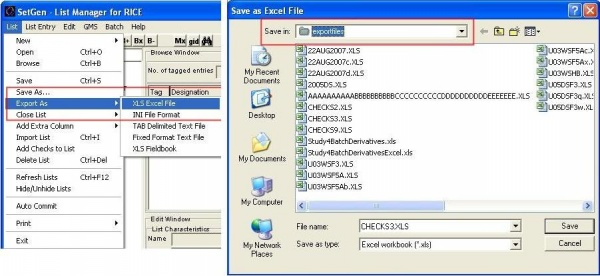
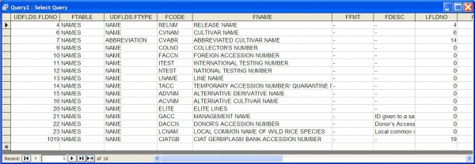
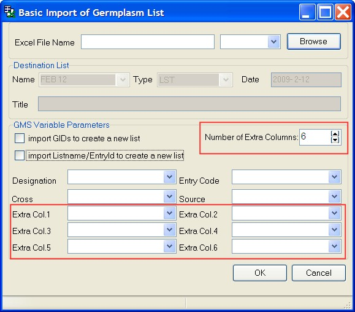

TDM SET GENERATION 5.5
From ICISWiki
Summary of New Features
SetGen 5.5 can also be known as the version with multi-user access. New features are added in the different forms of SetGen. Additional INI keys are provided to store checking or status of the application.
New INI keys
FILE_EXPORT_PATH
- Default file location for exporting files. It is used when users want to specify a directory for exporting their lists.
FILE_EXPORT_PATH=D:\ICIS5\exportfiles
- 
- Exporting list to the desired directory
CHECK_ATYPE
- This is used for checking the required Attribute Type(s) for each germplasm entries. The Attribute Types are defined in the UDFLDS table. Assign FLDNO number(s) to represent attribute type(s) for this INI key. For more than one attribute type, values are separated by a comma.
CHECK_ATYPE=103,104
- Upon closing of the list, a warning is displayed with entries that do not meet the required Attribute Type(s).
- Closing of List with a Warning Message
CHECK_NTYPE
- This INI key can now accept multiple values for Name Types. For specifying more than one required name type, values are separated by a comma. In the example below, 7 and 10 correspond to Abbreviated Cultivar Name and Foreign Accession Number as the required name types. Name Types are also defined in the UDFLDS table (just like the Attribute Types).
CHECK_NTYPE=7, 10
- This ensures that every GID has certain NameType(s) upon closing/saving of list.
- Warning Message for checking the required NameType(s)
OWNER_ACCESS
- This INI key has a boolean value, Yes or No. When not specified, the default value is YES. It means that only the OWNER of a LIST can lock, unlock, finalize, and delete his own lists. In cases where a list belongs to a group of users, there is also an option that allows the group members to change the status of the list, i.e. by setting OWNER_ACCESS to NO. A user (if not the OWNER of a LIST) will be able to change the LISTSTATUS (LOCK/UNLOCK, FINALIZE, DELETE) as long as he/she has the same or higher UACCESS within the same INSTALLID (=team/group) as the List owner.
OWNER_ACCESS=NO
- Actions on a list such as lock, unlock, finalize, hide, and delete depends on the value of OWNER_ACCESS
- List Menu
DEFAULT_FOLDER_TO_OPEN
- A folder in the List Manager can be set as the default folder to open upon startup of SetGen. Users need not write this manually in the INI file. When this menu is clicked, SetGen writes DEFAULT_FOLDER_TO_OPEN=<value of the selected folder> as one of the INI keys for SetGen.
MAINTENANCEMETHOD
- The default maintenance method ID to use in Generate GIDs in Batch Form. Default is 62 if not otherwise specified.
MAINTENANCEMETHOD=62
DER_SEPARATOR
- Specifies the character to use for generating derivative germplasms - both in Generate Derivatives in Batch Mode and Advance a Line One Generation forms. Default is dash ( - ) character.
DER_SEPARATOR=-
MGT_SEPARATOR
- Specifies the character to use for generating management germplasms - both in Generate Derivatives in Batch Mode and Advance a Line One Generation forms. Default is colon ( : ) character.
MGT_SEPARATOR=:
UNDERSCORE_IN_NAMES
- If set to YES, it allows the germplasm name to have underscore character. E.g IR 64_AABB. Default value is NO.
UNDERSCORE_IN_NAMES=YES
FINAL_LABEL
- The value here is used to replace the FINAL label status of lists.
FINAL_LABEL=Public
CHECK_NSTAT
- Checks the existence of one or more NSTAT for each germplasm entries in list (similar to CHECK_NYTPE where it is checked when list is saved or closed). NSTAT numbers (indicating the storage type and status of the name) that can be used are the ff: : 1 – Preferred name (must be ASCII), 8 - Preferred ID, 2 - Preferred abbreviations (must be ASCII), 3 - Chinese-GBK (GD) DBCS names, 4 - Chinese Big 5, 5 - Japanese 6 – Korean, 10 - UNICODE names which are not preferred
CHECK_NSTAT=1,8
Next sequence of a name type
- Automatic generation of the next sequence of a name type. The Prefix and the name type is declared in the INI file as follows:
NEXT_SEQUENCE_NAMETYPE=1 NEXT_SEQUENCE_PREFIX=PI
- NEXT_SEQUENCE_NAMETYPE
- NEXT_SEQUENCE_PREFIX
- Prefix of the nametype. This needs to be defined because there are other names of type Germplasm Bank Accession No. Like in the image below, PI and IRGC prefixes.
- These Names are of type Germplasm Bank Accession No. or NTYPE=1
CUSTOMIZED_DATA
- Represents the INI file to use when a user has SQL statements to run in DMS table.
CUSTOMIZED_DATA=D:\ICIS5\customizedData.ini
- Contents of customized.ini file has to have the following:
- Section - Each section appears as another customized Fill Withs and is saved as a column name
- Key - Affixed is a constant "SQL=" string as key for the SQL value to be recognized or read by SetGen.
- SQL Value - SQL statement to execute for each Fill Withs
- Question mark - GIDs of each list entries are substituted for this SQL query. It is done automatically by SetGen.
MAN
- Added checks bet. proper method-name type combination. Values (comma separated) specify the name types allowed for Maintenance method. Default value, if not specified, is
MAN= 1,4,6,7,9,10,11,12,13,14,15,16,20,21,22,23,1019
- 
- Valid nametypes for MAN method
GEN
- Added checks bet. proper method-name type combination. Values (comma separated) specify the name types allowed for Generative method. Default value, if not specified, is:
GEN= 2,3,1027
DER
- Added checks bet. proper method-name type combination. Values (comma separated) specify the name types allowed for Derivative method. Default value, if not specified, is:
DER= 4,5,6,7,12,13,15,16,17,18,19,20,1027
Attribute Inheritance
When users want their newly created germplasm(s) to inherit attributes automatically from a source germplasm, two INI keys can be set:
- DER_GETATYPE
This is for users who would like to automatically inherit attributes via derivative methods.
DER_GETATYPE=YES
- MAN_GETATYPE
This is for users who would like to automatically inherit attributes via maintenance methods.
MAN_GETATYPE=YES
Consider the following images:
- CNA 4196 is the source germplasm with two attributes - INGER and MLS_DATE
- Our source germplasm, CNA 4196, is advanced via the above form. A Derivative method is chosen. New attributes are also added by clicking the Attribute button.
- CNA 4196-300 is the resulting germplasm with new and inherited attributes from CNA 4196.
Other List Information form
A form to enter other information about the List is created. Users who want to add other information about the list should add entries in the UDFLDS table with LISTNMS as the value of FTABLE and LISTINFO as the value for FTYPE. The value in FDESC is the description that is shown in the form. These other descriptions about the list are dynamically created in the form and will be applied to all lists. A user who wants to add values about the list should open the list in Edit Window first and click Other Information (or ellipsis) button. Click OK to save the information and Cancel to exit. Values for each lists are saved in DMSATTR table.

- Other List Information as defined in the UDFLDS table
- Other List Information form
Additional options in Generate GIDs in Batch Mode
Users can now specify additional search fields such as Attribute, Location and Name Type when searching for a germplasm.
- Process entries by associating with an attribute
- Process entries by germplasm location
- Process entries by associating with a name type
If Automatically select hits with one find option is checked, these options become available. Otherwise, GMS Search is shown to let the user select the correct GID among germplasm names.
Multi-user access of Lists
It is now possible to start working with multiple users simultaneously in one local database. SetGen locks a list for other users when one user starts editing a list. When a user is editing a List, a pencil icon appears in the List Selector. If another user wants to edit the same List and clicks it, a message is displayed WHO is currently editing the list. There is an option to view the list that is in use in the Browse Window. The pencil icon disappears when a user is done with editing, i.e. it closes the list. However, for other users, frequent refreshing of the List Selector via
- Refresh Lists Ctrl+F12, or
- when a folder containing the lists is clicked
will give them a current view of the status of the lists. It is recommended that in a multi-user environment to close the list immediately after working on it. SetGen then sets the status of the list to normal at once.
- Pencil icon is displayed in a multi-user access environment
- A message on WHO is editing the list is displayed
Frequent refreshing of List Selector
SetGen refreshes the List Selector frequently since multiple users can access one local database simultaneously.
Users need to be able to see the Lists that are created and/or edited by other
users.
Status of lists is refreshed each time a user clicks on a Folder containing those lists. Another option is to right-click on a list and click Refresh Lists. This refreshes the whole tree (starting from the root).
- Options to refresh the status of lists
Save List As... in Browse Window
Save List As ... is now available in Browse Window. This function will save time for users who want to create a new list based on a list that is only viewable in Browse Window, i.e. germplasms from central data. Newly created list (as a result of Save List as... in Browse Window) is displayed in the Edit Window.
- Save List As... function in Browse Window
Functionality of Generate Derivatives in Batch Mode (B-) extended
There are two major changes in this form:
- Include leading zeros and Numeric field width options can now be applied to DMS Variable section
- Multiple Prefix and Suffix for Range option
Range can accept multiple values and so are Prefix and Suffix textboxes. These values are separated by a comma. Range values are paired with multiple values of Prefix and Suffix. Consider the following for generating 4 plants:
Prefix Range Suffix A,B,C,D 10-11,100-101 W,X,Y,Z
Resulting match:
-A10W -B11X -C100Y -D101Z
Users may enter multiple values of Prefix and Suffix that are less thanmultiple values of Range. The result is, some values may not have Prefix and/or Suffix. Consider the following for generating 4 plants:
Prefix Range Suffix A,B,C 10-11,100-101 W,X
Resulting match:
-A10W -B11X -C100 -101
If, however, Start No. option is chosen, the value of Prefix or Suffix is taken as a whole (regardless of a comma).
Prefix Start No. Suffix A,B,C 1 W,X
Resulting match:
-A,B,C1W,X -A,B,C2W,X -A,B,C3W,X -A,B,C4W,X
- SetGen 5.4 B- form
- SetGen 5.5 B- form
Functionality of Advance a Line One Generation [-] extended
Prefix and Suffix textboxes are added to this form. Same functionality, like in B- form, applies for multiple Range, Prefix and Suffix values.
- Advance a One Line Generation form or [-] form
Additional features for Import Germplasm List function
Import List function is accessed in the List Menu or press Ctrl+I. There are two types of Import function - Basic and Advanced. Pressing Ctrl+I displays the Basic Import form. Both Basic and Advance Import forms accept data for the 4 default columns namely, Designation, Cross, Entry Code, and Source in Edit window. Moreover, both forms accept Extra Columns for saving additional info other than info saved in the default columns. Advanced Import form differs from Basic because it can further accept these information: Germplasm Method, Name Type, Germplasm Date, Germplasm Location, Name Date, and Name Location.
- Import Function in the List Menu
The following options have been added:
- Extra columns/data in Import List
Ability to import additional data and save these data as name type, attribute, date or location. Upon import of additional data, it would be displayed in Edit Window as extra columns without headers. An instruction would appear as what to do with the extra data. It is necessary to click Save as Name Type, Save as Attribute Type, Save as Germplasm Date, or Save as Germplasm Location to assign an appropriate header name. Click Save List for these data to be properly stored in the database.
- 
- Import List with Extra Columns

- List created via Import List function
- Import Listname/EntryId to create a new list
Provided option for import Listname/EntryId to create a new list. Listname and EntryId values may now imported from Excel. SetGen will search for Listnames specified and get the germplasm or GID based on EntryId value from Excel file. There can be more GIDs found if there are similar listnames from diff. folders. Resulting GIDs is differentiated by specifying the folder name in the Source column.
- Import CIDs/SIDs to create a new list
Provided option for import CIDs/SIDs to create a new list. This option is applicable for BW (bread wheat) crops. CIMMYT has corresponding CID/SID for each GID. This option in Import is visible only if SetGen detects that a Germplasm table has extra CID and SID columns. This is similar to option import GIDs to create a new list, only, CID and SID are specified.
Added Save as Germplasm Date
To save the values of a column as Germplasm Date, it must follow this format:
YYYY-MM-DD or YYYY/MM/DD
Otherwise, an error message is displayed. MM and DD can be zeros if only year is known. One application of this feature is in conjunction with Import Germplasm List for its extra data.
Added Save as Germplasm Location
This can be used by Import Germplasm List function mentioned above. Location IDs are supplied in extra column. When Save as Location is called, it verifies the Location ID. If valid or exists in the database, it changes the location ID in each column to display the complete location details instead. If not valid, there is an error message and execution terminates.
Fill With Complete Germplasm/Name Type/Attribute Type Location
Added displaying of location of germplasm, name type and attribute in full detail in this format: Country, SNL1D, SNL2D, SNL3D, LNAME
Example:
Philippines, International Rice Research Institute, Genetic Resources Center, Long Term, LT,Tray No 626
Additional options in Fill With Location:
Fill with Location -> Complete Germplasm Location
Fill with Location -> Complete Name Type Location
Fill with Location -> Complete Attribute Type Location
These options are also available for Cross-Female, Cross-Male, Source, Cross Info, GID-Female/Source,
GID-Male/Source and Management Group Info.
Set Germplasm as Management Root
Set as Root of Management Group function is now available from List Manager popup in Edit Window. Tag all or select germplasm entries and its MGID in the database will be set to its own GID.
Setup Help files in Batch forms
Added labels for pressing F1 for help in batch forms.
Users can customize their own help files for the diff. batch forms. First, specify the ff. INI keys and values in [HELPINI] section of ICIS.INI file.
[HELPINI] IniPath=D:\ICIS5\DEVELOP\TEST\ IniFileName=HELP.INI
HELP.INI is located in IniPath. Then set the ff. values in [SETGEN] section of HELP.INI:
E.g. [SETGEN] AddBatchForm = http://cropwiki.irri.org/icis/help/index.html?batch_mode_processing.htm CrossBatchForm= D:\ICIS5\EXES\Help\batch_mode_processing.htm DerivativeBatchForm=http://cropwiki.irri.org/icis/help/index.html?batch_mode_processing.htm GIDBatchForm=http://cropwiki.irri.org/icis/index.php/TDM_SET_GENERATION_5.4#Batch_Mode_Processing
If any of the values in HELP.INI is missing, the label is not shown.
Call WorkBook from SetGen
Calls the Workbook to be one of the options of the right-click menu when list is highlighted (LISTID is the parameter).
SetGen writes under the [Workbook] section of the INI the listID and the List Type of the selected list:
[WORKBOOK] OpenList=-44,-58,-59 TmplList=LST.xls
OpenList INI key contains the list id and its parents (comma delimited). TmplList INI key contains the list type with .xls as extension.
Attributes as Documents/Files
Users can now define attributes of type "F" for File. SetGen recognizes these types and a "View File" popup is shown to open the file.
First, define in the SCALE table a scale with SCTYPE = F for file. Then, define Attributes that are associated for diff. kinds of documents/files in the UDFLDS table.
- SCALE Table
- UDFLDS Table
Next is to set ff. INI keys. FILE_PATH contains the location or full path of the documents and FILE_EXT is the extension of files or the type of file. E.g.
FILE_PATH=E:\ICIS5\documents FILE_EXT=.doc
In a column, right-click and select Fill with Attribute... A dropdown list of attributes is shown.
- Fill With Attribute menu function
- Drop down list of Attributes
Select an attribute that is associated with a file or document. NON-GMO document for this example.
Result is a column with NON-GMO document attributes. Right-click and View File menu popup is displayed.
- NON-GMO DOCUMENT and MTA NUMBER are Attributes associated with a file/document
To open the files via SetGen, is it assumed that these attribute values are filenames as well in the FILE_PATH specified.
- Example of documents in the location of FILE_PATH
Import function forms
Import List function is accessed in the List Menu or press Ctrl+I.
- Import Function in the List Menu
Two forms for Import function are available:
Basic Import - Original function or behavior is retained plus uploading of more information via extra columns.
Advanced Import - For user-defined methods, nametypes, germplasm date/location, name date/location and uploading of more information via extra columns.
IMPORTANT:
If method is provided, SetGen checks the proper method-name type
combination. Rules applied here are as follows:
Method-name type combination for method GEN
Valid name types: CRSNM, UNCRS, UNRES
Method-name type combination for method DER
Valid name types: RELNM, DRVNM, CVNAM, CVABR, NTEST, LNAME, ADVNM,
ACVNM, AABBR, OLDMUT1, OLDMUT2, ELITE, UNRES
Method-name type combination for method MAN
Valid name types: ACCNO, RELNM, CVNAM, CVABR, COLNO, FACCN, ITEST, NTEST
LNAME, TACC, ADVNM, ACVNM, ELITE, GACC, DACCN, LCNAM, CIATGB
In INI key, these look like the ff:
[SETGEN]
MAN=1,4,6,7,9,10,11,12,13,14,15,16,20,21,22,23,1019
GEN=2,3,1027
DER=4,5,6,7,12,13,15,16,17,18,19,20,1027
Above are the nametype ids defined in UDFLDS.
This is the default behavior if NOT specified otherwise in
[SETGEN]
MAN=<ntype id>, .... <ntype n>
GEN=<ntype id>, .... <ntype n>
DER=<ntype id>, .... <ntype n>
Barcode Tool
A barcoding tool has been setup specifically for IRRI INGER users. The size of sticker and labels to be printed are specific for their use. This could be a pilot model for others who wish to have their own barcoding tool as well.
Define this key in INI file:
DEF_LBLTYPE=8.9 cm x 3.6 cm labels
Generate Barcode will appear as one of the menu functions in right-menu click upon setting of the INI key.
- Generate Barcode function
This is the sample layout of each barcode. Information in SetGen columns are pre-defined to correspond for each label info.
Label types in the dropdown box can be added to accomodate other users who would like to define their own labels/layout.
Each label type corresponds to each user-specific layout needs.
- Sample barcode layout specific for each user
Click Generate report button to print the labels.
- Preview report about to be printed
Add a New Germplasm
New form/s for adding a new germplasm are implemented. The form for adding a new germplasm is modeled after Edit a GMS form used in modifying germplasm info. These forms have added features as well such as specifying Preferred Abrreviation and Preferred Id in addition to Preferred Name. Users have the option now to specify GIDs of germplasms in the Progenitors section (and not just the germplasm names). Click [+] button to start adding a new germplasm.
Germplasm details such as name, method, type, as well as Germplasm and Name date and location are specified here first.
- Name Information for New Entry
Click Ok and users are directed to a new form for adding more details on germplasm like attributes, alternative names, and progenitors. If a progenitor entered has been used as a name to different germplasms, Search a GMS form is displayed to choose the parent correctly. Otherwise, the GIDs of the parents are automatically given if already exist.
The Management Group for the new germplasm can be set as well.
- Add a GMS Germplasm Record
InTrack Reserve Form
A special form from InTrack standalone application has been integrated in SetGen. Pls. refer to TDM_ICIS_Inventory_Tracking_5.5#Integrated_to_SetGen for background info. This form is used solely for Reserving Seeds/germplasms thru SetGen. The same principle for reserving as specified in Inventory Tracking or InTrack applies here. This form has undergone some changes for ease of use within SetGen.
Set INI key below to enable View Inventory function in right-click menu of Edit Window.
ENABLE_INV=YES
- View Inventory function in right-menu click
This is the form integrated in SetGen. Reservations of seeds are tied up to a particular list in SetGen.
- InTrack Reserve form
Tag entries in Browse window and retrieve germplasm via these 3 modes: Exact GID, Derivative Neighborhood, and Management Neighborhood. In Exact GID, the resulting GIDS in Edit window are exactly the same as the GIDs tagged in Browse window. However, retrieving via Derivative or Management Neighborhood, it will show the germplasms in its particular neighborhood but excluding its own GID. More info can be found in TDM_ICIS_Inventory_Tracking_5.5#New_Reserve_Form_when_accessing_InTrack_thru_SetGen.
Tag entries in Edit window to reserve amounts for those germplasms. User can either right-click on the Amount header and input the same amount for all tagged or individually input the amounts directly on each cells in the Amount column. Click Save to reserve. These are pending reservations as shown in the Amount column. Reserves are then approved by the administrator using InTrack standalone. Users may found that their reservations have been approved when there's a value already in the Committed Amount column. See that the Available Balance and Actual balance are updated whenever new reservations and/or deposits are made or approved for each germplasm. Pls. see TDM_ICIS_Inventory_Tracking_5.5#Retrieving_a_Reserve for more info.
Added Features/Bug Fixes
* Finds the value or information of Attributes defined in Scaledis Table
* Solved the inconsistency with regards to calling cross expansion when crop name is BW. It passes
user's specified level (and not 5 which is the default level used in the code before).
* Writes these INI keys if NOT specified (so the users will know the default values used by SetGen):
METHODGRP=S G
STANDARDIZE=YES
GENERATIVEMETHOD=101
DERIVATIVEMETHOD=205
MAINTENANCEMETHOD=62
DER_SEPARATOR=-
MGT_SEPARATOR=:
MAN=1,4,6,7,9,10,11,12,13,14,15,16,20,21,22,23,1019
GEN=2,3,1027
DER=4,5,6,7,12,13,15,16,17,18,19,20,1027
* Added INI key for changing the label of FINAL status of list to whatever is assigned in the INI key.
[SETGEN]
FINAL_LABEL=Public
SET GENERATION MODULE (SETGEN)
Introduction
The Set Generation Module (SETGEN) is an application that uses the GMS to produce lists of germplasm descriptors for breeding, evaluation, or any other purpose. List entries need not exist in GMS, but if they do not, they may be added through the external pedigree input tool, which is integrated with SETGEN. Germplasm descriptors can be selected from existing lists or directly from GMS. Details of the new germplasm generated by the list process are stored in the GMS. It is not necessary that all information about a particular germplasm be entered at one time, because modifications can be made to germplasm records at any time.
The functions of SETGEN are:
• to produce lists of germplasm descriptors defining new crosses or selections, or for evaluation, distribution, or management,
• to retrieve GMS details of existing germplasm needed for field book construction, and
• to record all GMS details of new germplasm generated by the list process.
SETGEN is an application designed for plant breeding and germplasm evaluation. Breeders usually start with a list of potential parents (i.e., a list of rice varieties, each known for specific traits). From this list, the breeder selects male and female parents and makes a crossing list. After crossing and selfing, selections are made from one list and moved to the next list for the next generation. This process continues until successful fixed lines are derived.
SETGEN adds new germplasm to the Local GMS, which are seen only by authorized users. Only when the local database is uploaded to the Central GMS will the information be made public.
SETGEN allows the user to specify default values to use at start-up by reading the [SETGEN] section of the current INI file. The types of default values that may be specified are: crop, default methods, and locations. The [SETGEN] section is also used to store values used by SETGEN in the session immediately preceding. If the [SETGEN] section does not exist, the following defaults are used: RICE for crop, and all of the self pollinated (‘S’) and general (‘G’) methods.
The [SETGEN] section follows the INI file format (please refer to...). For example, to specify the bread wheat crop, the [SETGEN] section must include the following line: CROP=BW. The table below contains SETGEN keys that may be specified to a desired value, if the default value is otherwise. If a key is not found, the corresponding default value (in parenthesis) is assigned.
Table 1.1 SETGEN Initialization Keys
| Key | Valid Values | Remarks |
|---|---|---|
| CROP | CROP NAME (RICE) | If CROP=BW (bread wheat), group names are constructed using abbreviated cross names instead of conventional purdy cross expansions. |
| STANDARDIZE | YES, NO (YES) | If STANDARDIZE=YES, a name is first converted to the ICIS naming convention before it is added to the local GMS. |
| DEFCTYID | Long Integer (171) | The Location ID of a country whose locations are initially displayed in the Select a Location window. Valid country ID values currently range from 1,2,..,267. |
| DEFLOCID | Long Integer (9000) | The Location ID whose name appears as a specified default location in windows wherein location may be specified. |
| GENERATIVEMETHOD | Integer (101) | The generative Method ID of a default method to appear in the Generate Crosses window. |
| DERIVATIVEMETHOD | Integer (205) | The derivative Method ID of a default method to appear in the Advance a Line One Generation window. |
| CHECKDERIVATIVE | Integer (10) | If CHECKDERIVATIVE<10, a derivative name is verified for its existence in the GMS. If a name exists, a query appears with several options for the user. Otherwise, if CHECKDERIVATIVE>=10, no checking is done; a derivative is automatically added to the local GMS, whether or not the name already exists. |
| PNAME_IF_UNKNOWN_GRP | YES, NO (NO) | If PNAME_IF_UNKNOWN_GRP=YES, a germplasm whose group is unknown is displayed as ‘?/? [preferred name]’; otherwise group germplasm is ‘?/?’. |
| NO_LISTNAME | YES, NO (NO) | If NO_LISTNAME=YES, the default seed source value is displayed as ‘entry code’; otherwise seed source is displayed as ‘list name-entry code’. The default value appears only when an entry is selected from the Browse window. |
| AUTOCOMMIT | YES, NO (NO) | If AUTOCOMMIT=YES, each change SetGen makes to the local database is automatically saved immediately after the change is done; otherwise, changes have to be made by clicking on the <List><Save> menu. |
| MULT_ENTRYCD | YES, NO (NO) | Used in the Advance a Line One Generation window. If MULT_ENTRYCD=YES, each derivative has an entry code value as ‘entry code-plant no.’; otherwise, each derivative has the same entry code value. |
| UPD_GRP | YES, NO (NO) | If UPD_GRP=YES, group germplasm values of entries added by selecting from the Browse window is automatically updated to its cross expansion; otherwise, the group value from the Browse window is copied to the Edit window. |
| METHODGRP | METHODS.MGRP values (S G) | The group of methods retrieved from the GMS METHODS table and displayed to the user to select from. The default group of methods retrieved are selfing (S) and general (G) methods. Each group of method must be separated by a space. Other groups include cloning (C) and open pollination (O). |
| MULT_SAMENTYPE | YES, NO (NO) | If MULT_SAMENTYPE=YES, a germplasm can have several names of the same nametype. |
| MULT_SAMEATYPE | YES, NO (NO) | If MULT_SAMEATYPE=YES, a germplasm can have several attributes of the same Attribute type. |
| MAX_LISTNAMECHAR | Integer (48) | Number of LISTNAME characters. The maximum value is 48. |
| AUTO_GENLSTNAMESCALEID | Integer (0) | ScaleID of the SQL to be used to generate the ListName. |
| AUTO_GENFUNCCODE | CODE | Generate Code String used to identify the algorithm to use to generate ListName. |
| ENABLE_INV | YES,NO (NO) | Flag whether to enable InTrack(ICIS Inventory Tracker). |
| MULT_SOURCE | YES,NO (NO) | Used in the Advance a Line One Generation window. If MULT_SOURCE=YES, each derivative has a source value as ‘source-plant no.’; otherwise, each derivative has the same source value. |
| AUTOFILLVCOL | YES,NO (NO) | Flag to automatically retrieve contents of virtual columns. |
| HELPFILE | help File Path | The file path of the Helpfile to use. |
| CHECK_NTYPE | Integer (0) | Flag to provide check for the existence of a Name TYPE id specified for each germplasm whenever a list is being closed. For specifying more than one required name type, values are separated by a comma. |
| TEXT_SUFFIX | String | The String to use as suffix for textlines whenever a fill with sequence is done. When you have text lines you dont want them to be numbered in the sequence so you can add this suffix to the sequence value for the line above the text line. |
| TEXTLINE | YES,NO (NO) | Used in Import Germplasm form. If TEXTLINE=YES, the column with Textline values can be specified in the Import Germplasm form |
| DEL_GERM_WITH_DESCENDANTS | YES,NO (YES) | If DEL_GERM_WITH_DESCENDANTS=YES, when a germplasm is deleted, its descendants are deleted as well. Otherwise, deleting of germplasm with descendant(s) is/are not allowed. |
| DEF_DATE | String ( - - ) | Default Date Format used in generating GIDs in batch Mode |
| CHECKSAME_NVALUES | YES,NO (NO) | If CHECKSAME_NVALUES=YES, a message that checks whether other germplasms have the same name is displayed. Otherwise, no message is displayed |
| LIST_PANEL_WIDTH | Integer | Determines the width of the tree or List Selector panel in Mainform |
| FILE_PATH | String | Represents a url or directory path for viewing files. This is used if a file/document is associated with a germplasm attribute. |
| FILE_EXT | String (.pdf) | Represents the extension of a file (e.g. doc or pdf). This is used if a file/document is associated with a germplasm attribute. |
| SEPARATOR | String (/) | A string value used in Matrix Form for separating Female-Male info combination in naming Enry Code and Source |
| FILE_EXPORT_PATH | String | Default file location for exporting files. It is used when users want to specify a directory for exporting their lists. |
| CHECK_ATYPE | String | This is used for checking the required Attribute Type(s) for each germplasm entries. Assign FLDNO number(s) to represent attribute type(s) for this INI key. For more than one attribute type, values are separated by a comma. E.g. CHECK_ATYPE=103,104 |
| OWNER_ACCESS | YES,NO (YES) | Only the OWNER of a LIST can lock, unlock, finalize, and delete his own lists. If set to NO, users can modify any lists. |
| DEFAULT_FOLDER_TO_OPEN | String | A folder in the List Manager can be set as the default folder to open upon startup of SetGen. This option is available in 'Set as Default Folder' in one of the folder menus. |
| MAINTENANCEMETHOD | Integer (62) | The default maintenance method ID to use in Generate GIDs in Batch Form. Default is 62 if not otherwise specified. |
| DER_SEPARATOR | String (-) | Specifies the character to use for generating derivative germplasms - both in Generate Derivatives in Batch Mode and Advance a Line One Generation forms. Default is dash ( - ) character. |
| MGT_SEPARATOR | String (:) | Specifies the character to use for generating management germplasms - both in Generate Derivatives in Batch Mode and Advance a Line One Generation forms. Default is colon ( : ) character. |
| UNDERSCORE_IN_NAMES | YES,NO (NO) | If set to YES, it allows the germplasm name to have underscore character. E.g IR 64_AABB. Default value is NO. |
| FINAL_LABEL | String | The value here is used to replace the FINAL label status of lists. |
| CHECK_NSTAT | String | Checks the existence of one or more NSTAT for each germplasm entries in list (similar to CHECK_NYTPE where it is checked when list is saved or closed). NSTAT numbers (indicating the storage type and status of the name) that can be used are the ff: : 1 – Preferred name (must be ASCII), 8 - Preferred ID, 2 - Preferred abbreviations (must be ASCII), 3 - Chinese-GBK (GD) DBCS names, 4 - Chinese Big 5, 5 - Japanese 6 – Korean, 10 - UNICODE names which are not preferred |
| NEXT_SEQUENCE_NAMETYPE | Integer | Automatic generation of the next sequence of a name type. The value is the nametype ID in UDFLDS table. |
| NEXT_SEQUENCE_PREFIX | String | Prefix of the nametype. This needs to be defined because there may be other names of the same nametype. |
| MAN | String (1,4,6,7,9,10,11, 12,13,14,15,16, 20,21,22,23,1019) | Check bet. proper method-name type combination. Values (comma separated) specify the name types allowed for Maintenance method. |
| GEN | String (2,3,1027) | Check bet. proper method-name type combination. Values (comma separated) specify the name types allowed for Generative method. |
| DER | String (4,5,6,7,12,13,15, 16,17,18,19,20,1027) | Check bet. proper method-name type combination. Values (comma separated) specify the name types allowed for Derivative method. |
| DER_GETATYPE | YES,NO (NO) | Set to YES to automatically inherit attributes from a source germplasm via derivative methods. |
| MAN_GETATYPE | YES,NO (NO) | Set to YES to automatically inherit attributes from a source germplasm via maintenance methods. |
| CUSTOMIZED_DATA | String | Represents an INI file (and its complete location) to use when a user has SQL statements/query for the DMS table. Result is displayed in one of the columns with Fill Withs... function. |
Starting SETGEN
Start SETGEN by clicking on the SETGEN icon, or select SETGEN from the ICIS Launcher. If the ICIS User_ID and Password have not been stored in the current INI file (4.2.4), the log-on window (Figure 1.2.1) prompts the user for an ICIS username and password. Enter them in the spaces provided and click <OK>.

Any one of the following results may occur:
- ''The List Manager Opens.'' If connection to the central and local databases is successful, the List Manager opens.
- ''An Error Message Appears.'' If an invalid username or password is entered, you are prompted to re-enter the username or password.
- ''An ODBC Warning Appears.'' An ODBC warning appears when the user does not have write privileges on the computer where either the central or local database resides. If the warning refers to the central database, ignore the warning and continue the session. If the warning refers to the local database, the user must exit the program and request for write privileges to the computer. Otherwise, an ODBC error may occur. A warning appears only if a computer can control user-access level, such as Windows NT.
- ''Not an authorized local GMS user. Setting local GMS to READ-ONLY.'' message appears. The logged on GMS user cannot make any changes to the local database. Name searching will only be allowed. Click <OK> to continue.
Note that the user can abort SETGEN before a successful log on. Simply click <Cancel>. The session will immediately terminate.
The List Manager
The List Manager (Figure 1.3.1) is SETGEN’s main form. It appears after a successful connection to ICIS. The List Manager is where germplasm lists (1.6) are viewed, generated, and manipulated.
The List Manager consists of the main menu and three windows: the List Selector, the Edit and the Browse windows. The List Selector displays existing germplasm lists in the local GMS that are not hidden. The List Selector panel can be adjusted. The edit and Browse windows are used to display the contents of a list. All lists can be opened in either window.
Figure 1.3.1 The List Manager

See also List Management to successfully handle all lists.
The Main Menu. The main menu is located at the upper leftmost part of the List Manager. There are five items in the main menu, namely: List, List Entry, Edit, GMS, Batch, and Help. A short description and contents of each submenu is found in Table 1.2. The corresponding shortcut(s) to each item is in brackets (i.e., [..]), found after the description. Default shortcuts are used while pressing on the <Alt> key and typing the keys that follow. Note that the <Alt> key must be kept pressed at the same time the other keys are pressed successively. Other shortcuts used are specified below:
Table 1.2 Description of Each Item in the Main Menu
| Item | Description |
|---|---|
| List Submenu | Contains operations to manipulate lists. |
| New | Generate a new list ot Folder. • List - Create a new List in the Edit Window [Alt-L-N-L] or [Ctrl+L] |
| Open | Open an existing list in the Edit window [Alt-L-O] or [Ctrl+O] |
| Browse | Open an existing list in the Browse window [Alt-L-B] or [Ctrl+B] |
| Save | Save a list currently open in the Edit window [Alt-L-S] or [Ctrl+S] |
| Save As... | Save a list currently open in the Edit window to another List Name [Alt-L-A] |
| Export As | Export a list highlighted in the List Selector in a specified file format. File formats to export to are: • XLS Excel File Format [Alt-L-E-X] |
| Close List | Close a list, which can be: • Edit [Alt-L-C-E] or [Ctrl+Alt+Y] |
| Add Extra Column | Add an extra column, which can be: • Edit [Alt-L-V-E] |
| Import List | Import germplasms into a list • Basic [Alt-L-I] or [Ctrl+I] |
| Add Checks to List | Add or Insert check germplasms into a list [Alt-L-C] |
| Delete List | Delete a list highlighted in the List Selector from the local GMS [Alt-L-D] or [Ctrl+Del] |
| Refresh Lists | Refreshes the status of lists in a multi-user access setting |
| Hide/Unhide List | Show/hide lists in/from the List Selector [Alt-L-H] |
| Auto Commit | If checked, each change made to the local GMS is immediately saved. [Alt-L-A] |
| Print: • List contents [Alt-L-P-L] | |
| Exit | Terminate SETGEN session [Alt-L-X] |
| List Entry Submenu | Contains interactive operations to add a list entry. [Note: A list must be currently open in the Edit window for List Entry operations.] |
| Add an Entry | Open the <Add a List Entry> window to specify an entry to add [Alt-N-A] |
| Generate a Cross | Open the <Generate Crosses> window to add a generative cross to the local GMS and the currently open list [Alt-N-C] |
| Advance a Line | Open the <Advance a One Line Generation> window to add a derivative cross to the local GMS and the currently open list [Alt-N-V] |
| Find | Search for a value in any of the columns of a list open in the Edit window. [Alt-N-F] |
| Edit Submenu | Contains operations that modify the contents of a list open in the Edit window. The items in the Edit submenu can also be displayed by right clicking on the mouse while the mouse is pointed over the Edit window. |
| Edit Entry Fields | Edit the fields of a highlighted entry [Alt-E-E] or <F2> |
| Remove Entry | Remove the highlighted entry from the list [Alt-E-R] |
| Add Blank Entry | Add a blank entry to the end of the list [Alt-E-A] |
| Replace Entry | Replace highlighted entry with another entry [Alt-E-Y] |
| Cut | Cut to clipboard one or more tagged entries. [Alt-E-T] or [Ctrl+Alt+X] |
| Copy | Copy to clipboard one or more tagged entries. [Alt-E-C] or [Ctrl+Alt+C] |
| Paste | Paste entries in clipboard before tagged entries in the list, or at the end of the list. [Alt-E-P] or [Ctrl+Alt+V] |
| Random Sort Entries | Sort the entries of a list randomly. [Alt-E-S] |
| GMS Submenu | Contains operations to view or modify a GMS record. The items in the GMS submenu can also be displayed by right clicking on the mouse while the mouse is pointed over the Edit window. |
| View Characteristics | View characteristics of a highlighted entry [Alt-G-V] |
| Edit Germplasm in GMS | Modify characteristics of a GMS record [Alt-G-E] or [Ctrl+E] |
| Delete Germplasm in GMS | Delete a GMS record [Alt-G-D] |
| Replace Germplasm in GMS | Replace a GMS germplasm record with another one [Alt-G-R] |
| Batch Submenu | Contains batch mode operations. |
| Add Entries | Generate a list of entries [Alt-B-A] |
| Generate Crosses | Generate a list of new crosses [Alt-B-C] |
| Generate Derivatives | Generate a list of new derivatives [Alt-B-D] |
| Generate GIDs | Generate GIDs for a list of entries {Alt-B-G] |
| Matrix Crossing | Generate new crosses by a matrix [Alt-B-M] |
| Relative Search | Search for germplasm relatives [Alt-T-R] |
| Help Submenu | Contains version information. |
| Help | Open the on-line help. [Alt-H-H] |
| About | Display the current version. [Alt-H-A] |
The List Selector. The vertical window on the left is the List Selector. The width of the List Selector panel can be adjusted by moving the vertical splitter. The adjusted width is saved in INI key LIST_PANEL_WIDTH=<size>. Alternately, the value can be edited manually in the INI file. This setting will be the default list panel size until the width is re-adjusted or another INI file is used.
The List Selector maintains an alphabetically ordered list of lists in the current local database. Lists can be highlighted by clicking on their names or by moving the scroll mouse button. Right clicking on selected lists gives the user access to many of the list menu items.
A list can also be sorted by type. Check the Sort By Type box at the bottom of the List Selector to sort the lists by type. Uncheck the box to sort by name.
A list can be opened in the Edit window by double clicking on a desired list name. The list is opened and its contents displayed in the Edit window.
The List Selector has the option to hide or show existing lists. To hide or show lists, click on the <List><Hide/Unhide List> menu, or while the mouse is pointed over the List Selector, right click and select <Hide/Unhide List>. A window similar to Figure 1.3.2 appears. All existing lists in the local GMS are displayed in the window. To hide or prevent a list from being displayed in the List Selector, uncheck the box appearing before a list name. To show or display a list in the List Selector, check the box before a desired list name. After checking/unchecking all lists to display/hide, click <Close>. The List Selector is updated, with the checked lists displayed and the unchecked lists hidden.
Figure 1.3.2 Hide/Unhide a List
Different icons that appear for each folder/list represent the different statuses summarized as follows:
Table 1.3 Folder/List Status
| Icon | Description | |
|---|---|---|
| Local germplasm list. Viewed in Browse or Edit window. | |
| Local germplasm folder | |
| Central germplasm list. Viewed only in Browse window. | |
| Central germplasm folder. | |
| A locked germplasm list. Can be viewed only in Browse window. Only the owner can unlock the list (unless OWNER_ACCESS=NO in INI file). | |
| A locked germplasm folder. Setting a folder to lock will subsequently lock all lists belonging to this folder. Only the owner can unlock the folder and lists (unless OWNER_ACCESS=NO in INI file). | |
| A final germplasm list. No more changes to the list can be made, even by the owner, if it is set to final. Viewed only in Browse window. | |
| A final germplasm folder. Setting a folder to final will subsequently finalized all lists belonging to this folder. The folder/lists cannot be modified even by the owner. | |
| A local germplasm list that is currently being edited. If in a multi-user access environment, the name of the user editing it appears as hint. | |
| A folder that is always opened at startup and when lists are refreshed. Right-click a folder and click 'Set as Default Folder' to make the selected folder the default. |
The Browse Window. The Browse window is the top window of the List Manager. It is used to “browse” or tag entries to add to the currently open list in the Edit window. A “browse” entry cannot be edited. A list can be opened in the Browse window by either:
(1) highlighting the desired list in the List Selector, and clicking on the <List><Browse> menu, or
(2) right clicking while pointed over the List Selector and clicking <Browse>.
The width of a column can be adjusted. Place the mouse on a column border on the first line of the window and drag the cursor left or right as needed. Similarly, the height of the Browse window can adjusted by placing the mouse on the bottom border and dragging the cursor up or down, as needed.
The following operations can be performed to a list open in the Browse window:
- Tag/Untag Entry
An entry is tagged if the last column has ‘x’ in it. To tag an entry, click on the desired line. A tagged entry can be untagged by clicking on it. A tagged entry can be added to the Edit window, or used in a process to generate new germplasm, or have its germplasm characteristics viewed. - Sort Column in Ascending/Descending Order
Any of the columns can be sorted in either ascending or descending order. To sort a column, right click on the desired column heading. A pop-up menu appears. Select either Sort Ascending or Sort Descending menu.
The Edit Window. The Edit window appears under the Browse window. It is used for generating or modifying germplasm lists. Entries added to the window may consist of newly generated germplasm or previously existing germplasm or both. The Edit window’s column widths or height can be changed in the same way as the Browse window.
A list in the Edit window can be manipulated by:
• Allowing new lists to be generated;
• Adding entries to a new or existing list;
• Removing entries from a list; or
• Modifying contents of a list entry.
Only one list can be opened in the Edit window at any given time. List manipulations can be specified by selecting an item from the main menu, or by right clicking while pointed over the List Selector. It is required to have an active list first in the Edit window before doing any list manipulations.
- Generate a New Germplasm List
To create a new list, click on bhe <List><New><List> menu or [Ctrl+L]; or point over on the List Selector, right click and select <New>.
If the Edit window has an opened list that has been modified, the query “Save changes to GMS?” appears. Click <Yes> to save the list and commit changes to the GMS. Click <No> to discard changes. Click <Cancel> to continue working with the currently opened list. [Note: This query does not appear if the <Auto Commit> menu item is checked.]
Enter the list name, select the list type, specify a list date, and a list description or title in their appropriate places. A list name must be specified before any entries can be added; all other fields are optional. After desired fields have been filled in, entries can be added to the new list.
To automatically assign entry code values, check the ‘Entry Code Naming Convention’ box. A window similar to 1.3.3 appears.
Figure 1.3.3 Specify a Naming Convention
Specify values to any of the fields in the window: a prefix, start number, or a suffix. The include leading zeros check box and numeric field width are initially disabled. The prefix and suffix fields can consist of any combination of alphanumeric characters and/or blanks, up to a maximum length of eight. If an integer greater than zero is specified, the include leading zeros check box and numeric field width become enabled. The numeric field width default value is the number of digits in the next integer field. A value larger than the number of digits may be specified, if desired. To display entry code values in fixed format, check the include leading zeros check box.
Note: The maximum length an entry code value can have is 11. Any value whose length is greater than 11 is truncated.
Click <Close> when done; or press <Esc> to cancel. Values specified in this window will be assigned to the entry code field of each entry. For each succeeding entry, the next integer value automatically increments by one, if a value other than zero is specified.
- Open an Existing Germplasm List
To open a list in the Edit window, highlight a desired list in the List Selector, and:
(a) Click on the <List><Open> menu or press [Ctrl+O]; or
(b) Point over the List Selector, right click, and select <Open>; or
(c) Double-click on the highlighted entry.
If a selected list is currently open in either Browse or Edit window, a warning message appears. Otherwise, the contents of the selected list are displayed in the Edit window. The list may now be manipulated.
- Browse a Germplasm List
In the List Selector, highlight a list to browse, and:
(a) Click on the <List><Browse> menu or press [Ctrl+B]; or
(b) Point over the List Selector, right click, and select <Browse>.
- Save a Germplasm List
To commit all changes made since the last save, click on the <List><Save> menu or press [Ctrl+S]. [Note: If <Auto Commit> is checked, there is no need to click on the <List><Save> menu.]
- Save a Germplasm List as a New List
A currently open Edit list can be saved as another list. Change the current list name to a desired new list name, and modify other list characteristics as desired. Click on the <List><Save As> menu.
- Export a Germplasm List
A germplasm list may be exported to files as either an Excel file, or a formatted ASCII file. An ASCII file can be exported to: an INI file format, a tab-delimited text file, or a fixed format text file. Table 1.1 contains the file formats a list can be exported to.
(a) To export a list currently open in the Edit window, point the mouse over the Edit window, right click, and select <Export As><export format>.
(b) To export a list appearing in the List Selector, highlight the desired list to export and click on the <List><Export As><export format> menu.
In either case, a Save Dialog box appears. If FILE_EXPORT_PATH has been set in ICIS.ini, its location value would be the default directory that is displayed in Save Dialog box. Otherwise, select the directory, enter a filename, and click <Save>. Click <Cancel> to abandon exporting. After exporting, the file can be opened and viewed using an appropriate application for it.
- Close a Germplasm List
Close Edit List. To clear the Edit window:
(a) Click on the <List><Close List><Edit> menu or press [Shift+F2]; or
(b) Point the mouse over the Edit window, right click, and select <Close List>.
If there are unsaved changes, follow the steps described in (4).
Close Browse List. To clear the Browse window:
(a) Click on the <List><Close List><Browse> menu or press [Shift+F1]; or
(b) Point the mouse over the Browse window, right click, and select <Close List>.
Close Browse and Edit Lists. To clear both Browse and Edit windows, click on the <List><Close List><All> menu or press [Shift+F3]. If there are unsaved changes, follow steps described in (4). Both windows are cleared.
- Delete a Germplasm List
To delete a list from the GMS, it must not be open in either Browse or Edit window. Highlight a list to delete in the List Selector, and:
(a) Click on the <List><Delete List> menu or press [Ctrl+Del]; or
(b) Point the mouse over the List Selector, right click and select <Delete List>.
NOTE: Only the list is deleted from GMS, not germplasm data.
- Hide/Unhide a Germplasm List
To specify which lists to show or hide from the List Selector:
(a) Click on the <List><Hide/Unhide List> menu; or
(b) Point the mouse over the List Selector, right click and select <Hide/Unhide List>.
- Auto Commit
The Auto Commit option is on if a check appears beside the <List><Auto Commit> menu. Each transaction that is made with the GMS is automatically saved. A saved or committed transaction cannot be unsaved. Set Auto Commit on to save each transaction that is made; if no check appears beside the Auto Commit option, set it on by clicking on the <List><Auto Commit> menu. Otherwise, set Auto Commit off; if a check appears before the option, set it off by clicking on the <List><Auto Commit> option.
- Print a Germplasm List
A list can be printed in any of the following ways:
(a) Print the contents of a list, i.e., entry code, designation, and source; or
(b) Print germplasm characteristics of each of the entries; or
(c) Print the contents of a list and print germplasm characteristics of each entry.
A list open in the Edit window or a highlighted list in the List Selector can be printed.
(a)Print a highlighted list in the List Selector. In the List Selector, highlight the desired list, right click and select <Print><print option>.
(b)Print an Edit list. Click on the <List><Print><print option> menu.
- View Characteristics of a Germplasm List
To view list characteristics, highlight the desired list in the List Selector, right click and select <List Characteristics>. A window, similar to Figure 1.3.4 appears. A list’s name, type, date, and title are displayed. Click <Close> or press <Esc> to exit.
Figure 1.3.4 View Germplasm List Characteristics

Common SETGEN Processes
Viewing germplasm characteristics, selecting a germplasm from a displayed list, or specifying a location are common SETGEN processes. These processes are used in more than one window.
- View Germplasm Characteristics
A list entry’s germplasm characteristics can be viewed in either the Browse or Edit windows, or in the Browse window of the Generate Crosses window.
To view germplasm characteristics, tag a desired entry or entries. Keep the mouse pointed over the (Browse or Edit) window, right click and select <View Characteristics>. The View Characteristics window appears. To view the tree or other characteristics, follow the steps described in TDM_GMS_SEARCH_5.5#Viewing_Characteristics.
The step is repeated for each tagged entry. After characteristics are displayed, the entry is untagged.
To print the characteristics of the highlighted entry in the tree, click <Print>.
To exit viewing, click <Close> or <Close All> to stop viewing all View Characteristics forms. Press <Cancel All> to stop viewing tagged entries altogether.
- Select Germplasm
Whenever a germplasm name is specified in SETGEN, a name search is performed and the results are displayed in a window similar to Figure 1.4.1. The desired germplasm can be selected from the list as follows:
Double click on a highlighted germplasm, or simply click <Select> or <Multiple Select>. The selected germplasm(s) is/are then subjected for further processing.
If the desired germplasm is not included in the displayed list, a new one may be generated by clicking <New>. Follow the steps described in 1.6.6-9 [1].
If a specific germplasm record is desired and its associated GID (germplasm identifier number) is known, enter the GID in the GID field and click <Go>. Only the germplasm record having the specific GID is retrieved and displayed.
To enter another search name, enter the name in the search box and click <Go>. Click <More> to go to the another batch of germplasm entries found, if any. Repeat the selection process.
To cancel selection, click <Close>.
This window is similar to GMS Search Standalone application. See TDM_GMS_SEARCH_5.5 to know more about its contents/sections.
Figure 1.4.1. Select Germplasm
- Select Location
A location can be specified when specifying characteristics of a cross or line, or when changes to a germplasm record, i.e., edit, delete, or replace, are made. A location can be specified in a window where a <Change> button appears beside a location field.
To specify a location, click <Change>. A window, similar to Figure 1.4.2 appears. The locations displayed in the listbox are the locations of a specified country. The four most recent locations selected are displayed in the shaded box below the listbox.
To retrieve locations, select the desired country from the country pick list. If the location ID of the desired country is known, it can be selected from the location ID pick list instead. Locations in the selected country are displayed in the listbox with the country itself as the default.
To select a different location, scroll the list with the scroll bar, or type the name of the location in the location field. Typing a name will cause the highlighted value to change to the one nearest the typed value. There is no highlighted value if no locations match a typed name.
To select a location, follow any of the steps described below:
(a) Double click on a desired location in the listbox; or
(b) Highlight a desired location and click <OK>; or
(c) Type the complete name and click <OK>. [Note: A location name which has been typed must match exactly a location in the listbox. Otherwise, an error message appears.]; or
(d) Select from the list of recent locations by double clicking on the desired location in the box; or
(e) Change a specified location to an unknown one. Clear the location field and click <OK>. The previously specified location is removed.
Figure 1.4.2 Select Location
To cancel the selection process, click <Cancel> or press <Esc>.
SETGEN GMS Tools
SETGEN provides a set of GMS tools to perform name searches or to assist the user to edit, delete, or replace germplasm records. Select a tool on the GMS menu or select a tool by right clicking while pointed over the Edit window.
- View Germplasm Characteristics
To view germplasm characteristics, follow the steps described in 1.4 Common SETGEN Processes - View Characteristics[2].
- Edit Germplasm Characteristics
New information pertaining to a germplasm may have been learned after having entered it into the GMS. Open the Edit a GMS Germplasm Record window:
(a) Point the mouse over the Edit window, right click and select <Edit Germplasm in GMS> or press [Ctrl+E]; or
(b) Click on the <GMS><Edit Germplasm in GMS> menu.
A window similar to Figure 1.5.1 appears.
Figure 1.5.1 Edit Germplasm Characteristics
If a germplasm to edit is an entry in the Edit window, it can be tagged before opening the Edit a GMS Germplasm Record window.
If an entry was tagged in the Edit window, its characteristics appear in the Edit a GMS Germplasm Record window. The <Go> button is disabled. Otherwise, enter the name, or germplasm ID, if known, in the appropriate field, and click <Go>. Select a desired germplasm by following the steps described in 1.4 Common SETGEN Processes - Select Germplasm [3].Characteristics of the specified or selected germplasm are displayed in the window.
The preferred name, preferred abbreviation, and preferred id may be changed to another value, and additional names associated with the germplasm record may be specified. Characteristics that may be edited are: breeding method, sources, i.e., parents or source germplasm, germplasm location, or germplasm date. Progenitors may be added, if needed; but, may only be removed while in the same process where they were added. Enter a management group for the germplasm, if any. Or check the Set as Root of Management Group to select itself as the management group.
To change a preferred name, abbreviation, or id to another value, the desired name must already exist. Highlight a name from either listbox displaying alternative names and click <Preferred Name/Abbr/Id>. The specified name appears in the appropriate (preferred) field. [Note: The option to change a preferred name to another is available only to germplasm records from the local GMS. This option is not available to germplasm records from the central GMS.]
To add an alternative name, click <Add>. A window as in Figure 1.5.2 appears. Specify a name and type. If the name location and date are known, specify them in their appropriate places. To specify a location, follow the steps described in 1.4 Common SETGEN Processes - Select Location [4]. The name of the user adding the germplasm (alternative) name is displayed. Click <OK> when finished. The name appears in the listbox on the right. To cancel adding a name, click <Cancel> or press <Esc>. Any newly prescribed name appearing in the right hand side of the listbox can be removed or canceled. Highlight the name to remove and click <Remove>. The name is no longer added as an alternative.
Figure 1.5.2 Prescribe an Alternative Name
- Delete GMS Germplasm Record
A germplasm record may be deleted, because of erroneous entries, from the GMS.
[Note: If INI key DEL_GERM_WITH_DESCENDANTS=NO, deleting of germplasm with descendant(s) is/are not allowed. Otherwise, when not specified or DEL_GERM_WITH_DESCENDANTS=YES, its descendants are deleted as well.]
Open the Delete GMS Record window by either:
(a) Point the mouse over the Edit window, right click and select <Delete GMS>; or
(b) Click on the <GMS><Delete> menu.
If a germplasm to delete is an entry in the Edit window, it can be highlighted before opening the Delete a GMS Germplasm Record window.
A window similar to Figure 1.5.3 appears.
If an entry was tagged in the Edit window, its characteristics appear when the Delete GMS Germplasm Characteristics window appears. The <Go> button is disabled. Otherwise, enter the name, or germplasm ID, if known, in the appropriate field, and click <Go>. Select a desired germplasm by following the steps described in 1.4 Common SETGEN Processes - Select Germplasm [5]. Characteristics of the specified or selected germplasm are displayed in the window.
The reason why a germplasm is being deleted must be specified; otherwise, the deletion process will not proceed. If the location where the deletion occurred is known, follow the steps described in 1.4 Common SETGEN Processes - Select Location [6]. Click <Delete>. To cancel deletion, click <Close> or press <Esc>.
Figure 1.5.3. Delete GMS Record
- Replace a GMS Germplasm Record with Another One
A germplasm record may be replaced with another one deleted, because of duplicate entries, from the GMS. Open the Replace a GMS Germplasm Record with Another One window by either:
(a) Point the mouse over the Edit window, right click and select <Replace GMS>; or
(b) Click on the <GMS><Replace> menu.
A window similar to Figure 1.5.4 appears.
To replace a germplasm record, enter a germplasm name to be replaced in the find field and click <Go> beside it. Follow the steps described in 1.4 Common SETGEN Processes - Select Germplasm [7]. Enter a germplasm name to replace it with in the replace with field and click <Go> beside it. Follow the steps described in 1.4 Common SETGEN Processes - Select Germplasm [8]. Characteristics of a germplasm to be replaced are displayed on the left side of the window; Characteristics of a germplasm to be replaced with are displayed on the right.
Figure 1.5.4 Replace a GMS Germplasm Record with Another One
Specify the germplasm locations and dates, and name locations and dates to use. To retain a value from the record to be replaced, click ‘<’ on the line corresponding to the desired field; otherwise, click ‘>’ on the line corresponding to a desired field. The default values are replacement germplasm record values.
Enter a reason why for the replacement. If the location where the replacement occurred is known, follow the steps described in 1.4 Common SETGEN Processes - Select Germplasm [9]. Click <Replace>. To cancel replacement, click <Cancel> or press <Esc>.
Basic Lists
The Add a New List Entry window is one window for adding germplasm entries to the Edit window. An entry is added by tagging a desired entry from the Browse window, or by specifying a name.
A list must be open in the Edit window, either by selecting an existing list from the List Selector or by creating a new list (1.3 The List Manager - The Browse Window - Tag/Untag List)[10].
- Add entry/entries from an existing list. To add an entry/entries from an existing list, open the list to add entries from in the Browse window (1.3 The List Manager - The Edit Window - Browse a Germplasm List)[11]. Tag a desired entry, or a range of entries, and click the [+] speed button.
Figure 1.6.1 Add entries from an existing list
Add entry by specifying its name. Click the [+] speed button.
The Add a New List Entry window (Figure 1.6.2) appears, with the ‘Standardize Name’ option checked as the default. If an entry was tagged from the Browse window, details of that entry, except for any attributes it may have, appear in the window. The <Ok to All> button is also enabled. If no entry was selected, the window is blank, except for the entry code and source default values. The <OK to All> button is disabled. The number of the next entry in the Edit list is entry code’s default value. Source has ‘?’ as the default value.
Figure 1.6.2 Add a New List Entry
- If an entry was selected from the Browse window, modify any of the displayed fields to a desired value; otherwise, if the designation field is blank, enter the germplasm name to add to the Edit list. The designation field cannot be blank; all other fields are optional. Modify or add values to the entry code and source fields. If an entry naming convention was specified (see 1.3 The List Manager - The Edit Window)[12]), a default entry code value appears.
- To automatically convert a name to the ICIS naming convention [13], check the ‘Standardize Name’ option. Otherwise, to add a name exactly as typed, uncheck or remove the ‘Standardize Name’ option.
- After entering or modifying field values, click <OK>. Follow the steps described in 1.4 Common SETGEN Processes - Select Germplasm)[14].
If an entry to add was tagged in the Browse window, the <OK to All> button is enabled; otherwise, it is disabled. Click this button to automatically add all tagged entries to the Edit list. The Add a New List Entry window will no longer appear for the remaining entries to be added.
If a group name value is specified and is not the same as the cross expansion of a selected germplasm, a query appears. Click <Yes> to overwrite the specified group name value with the cross expansion; click <No> to retain the specified value.
To cancel adding an entry, click <Cancel> or press <Esc>. The window is closed and returns to the List Manager.
[Note: If a name does not exist, follow steps 5-9 below; otherwise, select the appropriate germplasm to be added to the list.]
- Specified name does not exist in the GMS. If the name does not exist in the GMS, a window similar to Figure 1.6.3 appears. The specified name appearing in the germplasm name field cannot be edited. Default values for name type and germplasm method appear in the window. Default values for germplasm/name location and germplasm/name date appear if a previous session specified a location or date in this window.
Figure 1.6.3 Name Information for New Germplasm
Modify any of the default values that appear to the desired values. The name type and method must be specified by selecting from their drop down lists. If a method number is known, it can be entered instead of selecting from the germplasm method list. If location is known, click <Change> and specify a location. Follow the steps described in 1.4 Common SETGEN Processes - Select Location)[15] A name reference can be specified as well.
After all known information is been prescribed, click <OK>. Add a GMS Germplasm Record window similar to Edit a GMS Germplasm Record window (Figure 1.6.4) appears.
Click <Cancel> or press <Esc> and the query ‘Cancel entry?’ appears. Click <Yes> to cancel the process and return to the previous window; otherwise click <No> to continue the process.
- New entries not yet in the GMS are prescribed in the Add a GMS Germplasm Record window.
Initial values based on the values prescribed in Name Information for New Germplasm (see Figure 1.6.3 ) are copied to Add a GMS Germplasm Record window (Figure 1.6.4 ). If the new germplasm entry is in cross expansion form, i.e., there is a slash (‘/’) in the name, the Progenitors section is filled up with female and male parents. Also, a default source and group germplasm value appears in the Progenitors section if there is at least one dash (‘-‘) in the new entry name. Set as Root of Management Group may be checked if the new entry will be the start of the management group. Otherwise, enter another value and click <Add/Change>. Overwrite the default values to the correct values, if needed.
Figure 1.6.4 Add a GMS Germplasm Record
- To add an alternative name, follow the steps described in 1.5 SETGEN GMS Tools - Edit Germplasm[16]. To prescribe a preferred abbreviation, highlight the desired name from the list of alternative names added and click <Pref. Abbr>. Same procedure applies in selecting a preferred name and id by clicking <Pref.Name> and <Pref.Id> respectively.
Default values for germplasm date, location, and method appear, if in the previous window (Figure 1.6.3), a date, location, and method was prescribed. Change the default values to desired values, if needed.
- To specify an attribute, click <Add> on the Attributes section of Add a GMS Germplasm Record form (see Figure 1.6.4). A window similar to Figure 1.6.5 appears. Select the type of attribute to add from the drop down list, and enter its value in the appropriate space. Click <OK>. The newly specified attribute is added to the list box of Add a GMS Germplasm Record form. To add another attribute, repeat the steps described.
Notes:
(a) An attribute becomes associated with the germplasm record, and not the germplasm entry only.
(b) An attribute can be removed only in the same session as specifying an attribute. When the window is closed, specified attributes can no longer be removed. You must cancel adding an entry to remove all newly associated attributes.
Figure 1.6.5 Add a Germplasm Attribute
- When done, click <OK>. Each of the components of the purdy cross history or source germplasm is automatically parsed and a name search performed.
If more than one name exists in the GMS, select the appropriate germplasm. If there is only a single hit, it is automatically selected by the process. If a component name does not exist in the GMS, it is automatically added as an unknown derivative method with unknown sources. The new entry is added to the Edit window.
To cancel the process, click <Cancel>.
Edit Germplasm List
An Edit list can be modified by any of the following: edit list characteristics, edit entry fields, remove an entry, add a blank entry, or replace an entry with another one. Tag the desired entries to edit and select the appropriate operation from the <List Entry> menu or by right clicking while pointed over the Edit window.
- Edit List Characteristics
List characteristics may be edited, if desired. To edit a list characteristic, change the value of the list characteristic to a desired one. Any of the fields may be edited.
Note: If the list name is changed to another name, click on the <List><Save As> menu item instead of <List><Save>. The current list will be saved to a new list.
- Edit Entry Fields
To edit an entry, open the list containing the desired entry in the Edit window. Tag the entry or entries to edit, then:
(a) Click on the <Edit><Edit Entry Fields> menu or press [F2]; or
(b) Point the mouse over the Edit window, right click and select <Edit Entry Fields>.
The Edit a List Entry window appears, similar to Figure 1.6.1. Modify the desired fields by following the steps described in 1.6 Basic Lists - step # 2.[17].
When done, click <OK>. To cancel editing at any time, click <Cancel> or press <Esc>.
When <OK> is clicked and the designation was edited, SetGen checks if the new name is already an existing name for the germplasm record. If not, the Confirm Entry window (Figure 1.7.1) appears.
Figure 1.7.1 Confirm Entry
(a) Click <Add Name> to add the modified name as an alternative name; or
(b) Click <Replace Entry> to perform another name search and replace the entry with another GID; or
(c) Click <Cancel> to cancel the process and go back to editing the entry.
The process is repeated for each tagged entry.
- Remove List Entry
Tag an entry or entries to remove from the list, then:
(a) Click on the <Edit><Remove Entry> menu; or
(b) Point the mouse over the Edit window, right click and select <Remove Entry>.
The tagged entries are removed from the list. [Note: Removing an entry from a list does not delete the germplasm record. To delete a germplasm record, click on the <GMS><Delete > menu.]
- Add Blank Entry
To add a blank entry to the end of an Edit list:
(a) Click on the <Edit><Add Blank> menu; or
(b) Point the mouse over the Edit window, right click and select <Add Blank>.
A blank entry makes spaces for unknown checks or general entries, whose GIDs are not yet known. Names and codes can be added to a blank entry at a later time by either editing the entry fields (1.7 Edit Germplasm List - Edit List Characteristics)[18], or replacing an entry (1.7 Edit Germplasm List - Replace Entry)[19].
- Replace Entry
If an error was made in entering an entry, or if a specific entry is already known after adding a blank entry, it would be desired to replace the entry with a correct or known one.
To replace an entry with another one, tag all entries to replace, then:
(a) Click on the <Edit><Replace Entry> menu; or
(b) Point the mouse over the Edit window, right click and select <Replace Entry>.
The Replace a List Entry window appears, similar to Figure 1.6.1. The window appears with corresponding field values appear in their appropriate places, except for designation, which is blank. Follow the steps described in 1.6 Basic Lists [20].
Edit Window Pop-up Menu Items
Four pop-up menus exist in the Edit window. A pop-up menu appears when the user right-clicks while the mouse is pointed over the Edit window. When right-clicking on a column header, one of four pop-up menus appears, depending on the column.
The pop-up menu that appears when the user right-clicks while the mouse is pointed over the Edit window appears in Table 1.4.
Table 1.4 Pop-up Menu Items via Right-click in the Edit Window
| Item | Description |
|---|---|
| Save List | Same as <List><Save> |
| Save List as... | Same as <List><Save As...> |
| Edit Entry Fields | Same as the <Edit><Edit Entry Fields> menu item. |
| Remove Entry from List | Same as the <Edit><Remove Entry> menu item. |
| Add Blank Entry | Same as the <Edit><Add Blank> menu item. |
| Replace List Entry | Same as the <Edit><Replace Entry> menu item. |
| Append Entry | Same as the <Edit><Replace Entry> menu item. |
| Insert Entry | Inserts a new germplasm entry above the tagged row. [Note: Appears only when there are tagged entries.] |
| Add/Insert Textline | Adds/Inserts a textline entry above the tagged row. If no entry is tagged, textline is inserted at the last row. |
| Cut | Same as the <Edit><Cut> menu item. |
| Copy | Same as the <Edit><Copy> menu item. |
| Paste (Before Tagged Entry) | Same as the <Edit><Paste> menu item. |
| Add Extra Column...... | A window appears to specify the number of extra columns to be added in the List |
| Save Headers and/or Extra Column Data | Saves the header(s) and information of the added column(s) to the local database |
| Retrieve Extra Column Data | Displays the headers and contents of the saved extra columns, if any. But if INI key AUTOFILLVCOL is set to YES, it automatically retrieves the contents of the extra columns upon opening of List in Edit window. |
| View Characteristics | Same as the <GMSt><View> menu item. |
| View Inventory | Seed inventory for this germplasm entry is displayed. [Note: Appears only if ENABLE_INV=YES.] |
| Export As | Same as the <List><Export As> menu item. |
| Print List Entries | Same as the <List><Print><List> menu item. |
| Print List Characteristics | Same as the <List><Print><Characteristics> menu item. |
| Edit Germplasm in GMS | Same as the <GMS><Edit Germplasm in GMS> menu item. |
| Delete Germplasm in GMS | Same as the <GMS><Delete Germplasm in GMS> menu item. |
| Replace Germplasm in GMS | Same as the <GMS><Replace Germplasm in GMS> menu item. |
| Close List | Close the list in the Edit window. |
The pop-up menu in Table 1.5 appears when a user right-clicks on any of the following columns: Designation, Cross, GID, or Entry ID column.
Table 1.5 Pop-up Menu Items for Designation, Cross, GID, or Entry ID Column
| Item | Description |
|---|---|
| Sort Ascending | Sort the entries in ascending order by the values in the column. |
| Sort Descending | Sort the entries in descending order by the values in the column. |
| Fill with Name | Fill the column with a specified name type. If no name exists for a specified name type, the column value is blank. [Note: Visible only in Designation column] |
| Fill with Preferred Name | Fill the column with the preferred name of the entry. This menu item is disabled in the Entry Code column. [Note: Visible only in Designation column] |
| Fill with Cross Expansion at the specified level | Retrieves the cross history at a certain level of germplasm entries. [Note: Visible only in Cross column] |
| Randomize | Sort the entries randomly. [Note: Visible only in Entry ID column] |
The pop-up menu in Table 1.6 appears when the user right clicks on the Entry Code, Source, or extra columns.
Table 1.6 Pop-up Menu Items for Entry Code, Source, or Extra Columns
| Item | Description |
|---|---|
| Sort Ascending | Same as <Sort Ascending> in Table 1.5 |
| Sort Descending | Same as <Sort Descending> in Table 1.5 |
| Fill with Sequence | Fill the column with a sequence of values. See Figure 1.8.1 below. |
| Fill with Name | Fill the column with a specified name type. If no name exists for a specified name type, the column value is blank. See Figure 1.8.2 below. |
| Fill with Preferred Name | Fill the column with the preferred name of the entry. This menu item is disabled in the Entry Code column. |
| Fill with Attribute | Fill the column with a specified attribute value. If specified attribute value does not exist for a germplasm entry, this is left blank. See Figure 1.8.3 below. |
| Fill with Generation Code | Compute the generation number of each germplasm entry. |
| Fill with Selection History | Fill the column with information about the methods and location on the development and generation of the germplasm |
| Fill with Cross Expansion at the Specified Level | Fill the column with the cross history of a germplasm at a certain level |
| Fill with Germplasm Date | Fill the column with the creation date of a specified germplasm |
| Fill with Unique ID | Fill the column with the corresponding germplasm unique ID. The unique ID consists of: the first four letters of the INSTLN.DESCRIPTION record corresponding to INSTLN.INSTALID=1. This menu item is disabled in the Entry Code column. |
| Comment Tagged Entries | All tagged germplasm entries will have ‘COMMENT’ written in the column. When a ‘COMMENT’ is written, the ‘Fill with …’ menu items will not fill the germplasm entry. |
| Save as Name Type | Add to the local database as a germplasm entry’s specified alternative name type whose value is in the column. |
| Save as Attribute Type | Add to the local database as a germplasm entry’s specified attribute type whose value is in the column. |
| Fill with Location Submenu | Fill the column with the location name/abbreviation/or number of either a germplasm, a specified name type, or attribute |
| Fill with Germplasm Location Name | Fill the column with the location name of a germplasm |
| Fill with Germplasm Location Abbrev | Fill the column with the location abbreviation of a germplasm |
| Fill with Germplasm Location Number | Fill the column with the location number of a germplasm |
| Fill with Name Type Location Name | Fill the column with the location name of a specified name type |
| Fill with Name Type Location Abbrev | Fill the column with the location abbreviation of a specified name type |
| Fill with Name Type Location Number | Fill the column with the location number of a specified name type |
| Fill with Attribute Type Location Name | Fill the column with the location name of a specified attribute type |
| Fill with Attribute Type Location Abbrev | Fill the column with the location abbreviation of a specified attribute type |
| Fill with Attribute Type Location Number | Fill the column with the location number of a specified attribute type |
| Fill with Breeding Method Submenu | Fill the column with the breeding method name/abbreviation/number or group |
| Fill with Breeding Method Name | Fill the column with the the breeding method name used for the germplasm entry |
| Fill with Breeding Method Abbrev | Fill the column with the the breeding method abbreviation used for the germplasm entry |
| Fill with Breeding Method Number | Fill the column with the the breeding method number used for the germplasm entry |
| Fill with Breeding Method Group | Fill the column with the the breeding method group used for the germplasm entry |
| Fill with DMS data.... | Fill the column with the DMS Variate of a particular study. See Figure 1.8.4 below. |
| Fill with Cross-Female Information Submenu | Fill the column with a particular information (as selected in the Submenu below) regarding the Female parent of the germplasm entry. If the germplasm entry’s method is generative, this corresponds to the GERMPLSM.GPID1 value; otherwise, if the method is derivative, the Female parent is the GERMPLSM.GPID1 of its group germplasm. |
| Fill with Name (of Cross-Female) Fill with Preferred Name (of Cross-Female) Fill with Attribute (of Cross-Female) Fill with Generation Code (of Cross-Female) Fill with Selection History (of Cross-Female) Fill with Location (of Cross-Female) Fill with Breeding Method (of Cross-Female) Fill with Germplasm Date (of Cross-Female) Fill with GID (of Cross-Female) Fill with Unique ID (of Cross-Female) Fill with DMS data (of Cross-Female) | See description above on Fill with Name, Preferred Name,.... |
| Fill with Cross-Male Information Submenu | Fill the column with information regarding the Male parent of the germplasm entry. If the germplasm entry’s method is generative, this corresponds to the GERMPLSM.GPID2 value; otherwise, if the method is derivative, the Male parent is the GERMPLSM.GPID2 of its group germplasm. |
| Fill with Name (of Cross-Male) Fill with Preferred Name (of Cross-Male) Fill with Attribute (of Cross-Male) Fill with Generation Code (of Cross-Male) Fill with Selection History (of Cross-Male) Fill with Location (of Cross-Male) Fill with Breeding Method (of Cross-Male) Fill with Germplasm Date (of Cross-Male) Fill with GID (of Cross-Male) Fill with Unique ID (of Cross-Male) Fill with DMS data (of Cross-Male) | See description above on Fill with Name, Preferred Name,.... |
| Fill with Source Information Submenu | Fill the column with information regarding the Source or GERMPLSM.GPID2 of the germplasm entry whose method is derivative; otherwise, if the method is generative, this is blank. |
| Fill with Name (of Source) Fill with Preferred Name (of Source) Fill with Attribute (of Source) Fill with Generation Code (of Source) Fill with Selection History (of Source) Fill with Location (of Source) Fill with Breeding Method (of Source) Fill with Germplasm Date (of Source) Fill with GID (of Source) Fill with Unique ID (of Source) Fill with DMS data (of Source) | See description above on Fill with Name, Preferred Name,.... |
| Fill with Cross Information Submenu | Fill the column with information regarding the Cross or GERMPLSM.GPID1 of the germplasm entry whose method is derivative; otherwise, if the method is generative, this is blank. |
| Fill with Name (of Cross) Fill with Preferred Name (of Cross) Fill with Attribute (of Cross) Fill with Generation Code (of Cross) Fill with Selection History (of Cross) Fill with Location (of Cross) Fill with Breeding Method (of Cross) Fill with Germplasm Date (of Cross) Fill with GID (of Cross) Fill with Unique ID (of Cross) Fill with DMS data (of Cross) | See description above on Fill with Name, Preferred Name,.... |
| Fill with GID-Female/Source Information Submenu | Fill the column with information of the female parent of the germplasm entry. If the germplasm entry’s method is generative, this corresponds to the GERMPLSM.GPID1 value; otherwise, if the method is derivative, this corresponds to the GERMPLSM.GPID2 value. |
| Fill with Name (of GID-Female/Source) Fill with Preferred Name (of GID-Female/Source) Fill with Attribute (of GID-Female/Source) Fill with Generation Code (of GID-Female/Source) Fill with Selection History (of GID-Female/Source) Fill with Location (of GID-Female/Source) Fill with Breeding Method (of GID-Female/Source) Fill with Germplasm Date (of GID-Female/Source) Fill with GID (of GID-Female/Source) Fill with Unique ID (of GID-Female/Source) Fill with DMS data (of GID-Female/Source) | See description above on Fill with Name, Preferred Name,.... |
| Fill with GID-Male/Source Information Submenu | Fill the column with the male parent of the germplasm entry. If the germplasm entry’s method is generative, this corresponds to the GERMPLSM.GPID2 value; otherwise, if the method is derivative, this is a blank. |
| Fill with Name (of GID-Male/Source) Fill with Preferred Name (of GID-Male/Source) Fill with Attribute (of GID-Male/Source) Fill with Generation Code (of GID-Male/Source) Fill with Selection History (of GID-Male/Source) Fill with Location (of GID-Male/Source) Fill with Breeding Method (of GID-Male/Source) Fill with Germplasm Date (of GID-Male/Source) Fill with GID (of GID-Male/Source) Fill with Unique ID (of GID-Male/Source) Fill with DMS data (of GID-Male/Source) | See description above on Fill with Name, Preferred Name,.... |
| Fill with Management Group Information Submenu | Fill the column with information regarding the Management Group or GERMPLSM.MGID of the germplasm entry whose method is derivative; otherwise, if the method is generative, this is blank. |
| Fill with Name (of Management Group) Fill with Preferred Name (of Management Group) Fill with Attribute (of Management Group) Fill with Generation Code (of Management Group) Fill with Selection History (of Management Group) Fill with Location (of Management Group) Fill with Breeding Method (of Management Group) Fill with Germplasm Date (of Management Group) Fill with GID (of Management Group) Fill with Unique ID (of Management Group) Fill with DMS data (of Management Group) | See description above on Fill with Name, Preferred Name,.... |
The pop-up menu in Table 1.7 appears when the user right-clicks on the Tag column.
Table 1.7 Pop-up Menu Items for the Tag Column
| Item | Description |
|---|---|
| Sort Ascending | Same as <Sort Ascending> in Table 1.5. |
| Sort Descending | Same as <Sort Descending> in Table 1.5. |
| Invert Tag | All tagged entries become untagged; all untagged entries become tagged. |
| Tag All | Tag all entries. |
| Untag All | Untag all entries. |
Figure 1.8.1 Fill With Sequence
See 1.3 The List Manager - The Edit Window - Figure 1.3.3 [21]
Figure 1.8.2 Fill With Name
Select a particular name type from the dropdown menu and click OK or click Cancel to exit.
Figure 1.8.3 Fill With Attribute
Select a particular attribute from the dropdown menu and click OK or click Cancel to exit.
Figure 1.8.4 Fill With DMS Data...
a) Select a specific Study to get the information from.
b) Select the GID Factor of the Study.
c) Select a Variate of interest from the dropdown menu. The value of the selected Variate is displayed in the Edit window column.
Cross List [GENERATIVE]
A cross list contains germplasm entries whose method of germplasm genesis was through a generative process. To generate a new cross list, click on the <List><New> menu. If modifications to an Edit list were made, the query ‘Save changes to GMS?’ appears. Click <Yes> to save changes; click <No> to discard changes; or click <Cancel> to continue editing the currently open list. Specify characteristics of the new list.
- To generate a new cross, click the [x] speed button above the Browse window. The Generate Crosses window appears, which is similar to Figure 1.9.1. Specify the CROP=<crop name> in INI file to append the crop name in the caption of the form. Default values for breeding method and name type appear. If a cross was specified previously, default values for dates and locations also appear. A List Selector appears on the left hand side, similar to the one in the List Manager. If a list contains a parent of the new cross, the list can be opened and browsed for an entry to be tagged and specified as a parent. [Note: The currently opened list in the Edit window cannot be browsed.] Double click on a list to browse. The entries of the list are displayed in the Generate Crosses’ browse window.
- A naming convention for new crosses can be specified, if desired. Check the use naming convention check box beside the designation field. A window, similar to Figure 1.3.3 [22] appears. Follow the steps described in 1.3 The List Manager - The Edit Window - Generate a New Germplasm List[23]. Each new cross that is specified is automatically assigned a new cross name. To stop the naming convention for new crosses, uncheck the box.
Figure 1.9.1 Generate Crosses
- The breeding method, germplasm date and location are specified at the top portion of the window. The breeding method is specified by either selecting from the drop down list, or by specifying the breeding number. Modify the germplasm date to a desired value. Specify a germplasm location, by following the steps described in 1.4 Common SETGEN Processes - Select Location [24].
- Specify the parents of the cross, if known. Specify a parent by either tagging an entry from the browse window, or by manually specifying the name in the next parent field.
Parent is a list entry. To specify a parent from an existing list, browse the list containing the desired parent. Tag the desired parent, and specify as either a female or male parent by clicking the appropriate button. [Note: A parent can also be specified by keeping the mouse pointed over the browse window, right click and select either female or male.]
The tagged entry appears in the appropriate parent box. The maximum number of parents that can be prescribed for a new cross is determined by the breeding method.
To specify another parent in place of the currently specified one, delete the parent from the parent box. To delete a parent, highlight the parent to delete, right click while pointed over the window, and click <Delete>. The highlighted parent from either female or male parent window is removed.
Parent is not a list entry. To manually specify a parent, type the parent name in the next parent field. Click <Female> if the typed name is a female parent; otherwise, click <Male>. A name search is performed. Select the desired parent from the displayed list.
Note: Germplasm characteristics of an entry in the browse window, or a specified parent can be viewed. To view germplasm characteristics of an entry in the browse window, tag the desired entry. While pointed over the window, right click, and select <View, Characteristics>. Follow the steps described in 1.4 Common SETGEN Processes - View Germplasm Characteristics [25]. The steps are repeated for each tagged entry. To view characteristics of a specified parent, highlight a desired parent select <View Characteristics>.
- The name type, name date, and name location are specified at the bottom portion of the window. If a cross naming convention was specified, the default name type that appears is cross name; otherwise, unnamed cross appears. Modify the values to new values, if desired.
If there is no naming convention, the default name that appears in the designation field is a cross expansion, based from the specified parents; otherwise the corresponding name for a new cross appears.
If there is an entry code name convention, the corresponding default value appears; otherwise, no value appears. The default source field value that appears is ‘list name- entry code of female parent/list name-entry code of male parent’. Otherwise, if NO_LISTNAME=YES is specified in INI file, default source field value is ‘entry code of female parent/entry code of male parent’. If a parent was specified through a name search, its corresponding source value is ‘?’ instead.
- There is the option to automatically add reciprocal crosses to the GMS or Edit list. To automatically add reciprocal crosses, check the ‘add reciprocal cross’ check box. To include a reciprocal cross in the Edit list, check the ‘add to list’ check box. [Note: Reciprocals are added only if a cross has one female and one male parent prescribed. Otherwise, no reciprocal is generated.]
- To specify an attribute, click <Attribute>. A window similar to Figure 1.9.2 appears. Select the type of attribute to add from the drop down list, and enter its value in the appropriate space. Click <Add>. The newly specified attribute is added to the list box below the attribute value. To add another attribute, repeat the steps described. To remove an attribute from the list box, highlight the attribute and click <Remove>. The removed entry will no longer be added as an attribute. After all desired attributes have been entered, click <Close>.
Notes:
(a) An attribute becomes associated with the germplasm record, and not the germplasm entry only.
(b) An attribute can be removed only in the same session as specifying an attribute. When the window is closed, specified attributes can no longer be removed. You must cancel adding an entry to remove all newly associated attributes.
Figure 1.9.2 Add a Germplasm Attribute
- When done, either click <Next> or <OK>. Click <Next> to continue specifying another new cross in the window. Otherwise, to close the window and return to the List Manager, click <OK>.
A newly prescribed cross is automatically added to the Edit list.
To cancel a process, click <Cancel>, or press <Esc>.
Selections List [DERIVATIVE]
A selections list contains germplasm entries whose method of germplasm genesis was through a derivative process from a source germplasm. A source germplasm can be a tagged entry in the browse window or specified manually. To generate a new selections list, click on the <List><New> menu. If modifications to an Edit list were made, the query ‘Save changes to GMS?’ appears. Click <Yes> to save changes; click <No> to discard changes; or click <Cancel> to continue editing the currently open list. Specify characteristics of the new list.
- A source germplasm to be put through a derivative process can be tagged in the Browse window, or specified manually. Tag all source germplasm entries in the Browse window, if there are any.
- To generate germplasm selections, click the [-] speed button above the Browse window. The Advance a Line One Generation window appears, similar to Figure 1.10.1. Specify the CROP=<crop name> in INI file to append the crop name in the caption of the form. Default values for breeding method and name type appear.
Default values for dates and locations may or may not appear.
If a source germplasm is from the Browse window, its name appears in the source germplasm field. The cross germplasm value that appears is itself, if the source germplasm has a generative breeding method, or its group germplasm, if it has a derivative breeding method. Default values in Entry Code and Source group boxes also appear depending on the selected check boxes.
If no entry was tagged in the Browse window, the source germplasm and cross germplasm fields are blank.
Figure 1.10.1 Advance a Line One Generation
- Specify the breeding method and name type at the top of the window to desired values.
- Specify dates and locations of germplasm name and the creation name, if desired.
- Specify a naming convention for the new derivatives in the naming convention group box. The naming convention is applied to the new derivatives by adding the convention to the end of the source germplasm name.
[Note: Set STANDARDIZE=NO for Leading Zeros and Numeric Field Width features to be considered in generating new derivative names. Otherwise, if STANDARDIZE=YES, this will take precedence even if Leading Zeros and Numeric Field Width features are specified.]
Different crops may use different naming conventions. SETGEN uses a standard naming convention for germplasm selections; i.e., given a SOURCE germplasm, a derivative can take any of the following forms:
• SOURCE-C1
• SOURCE-C1n
• SOURCE-C1nC2
• SOURCE-nC2
• SOURCE-n
• SOURCE
where n is an index such as the number of plants selected, with or without leading zeros; and C1 is the prefix and C2 is the suffix.
Derivative names are automatically generated with the number of generated names equal to the no. of plants selected (specified within the naming convention group box). If the number of plants selected is zero, one derivative is generated, whose name is the same as the source germplasm.
To specify a convention, follow the steps described in 1.3 The List Manager [26]. Set the plants selected counter to the desired number. If these are bulked to a single new germplasm entry, use the number of plants as a constant to generate only one derivative. If each plant is to form a new selection, use the number of plants as a variable and specify start plant number to the first index to be used. A new entry will then be generated for each new plant entry. For example, if three plants were selected from IR 43, and three is used as a constant, only one new germplasm is generated whose name is IR 43-3. If used as a variable with start plant number set at one, three new germplasm would result as: IR 43-1, IR 43-2, IR 43-3.
If no convention is specified, only one new germplasm is generated whose name is the same as its source.
A naming convention used in a derivative process is independent of the method or crop. Thus, different germplasm selections derived from the same method can have different naming conventions employed.
If a source germplasm was selected from the Browse window, proceed to step (7); otherwise, if a source germplasm is specified manually, proceed to the next step.
- If a source germplasm is not from the Browse window, specify it manually in the source germplasm field. A name search is performed and the results displayed in a window. Select the appropriate source germplasm.
If the source germplasm has a derivative germplasm method, the default cross germplasm value that appears is its group germplasm. Otherwise, the source germplasm is the group germplasm itself.
If either source germplasm or group germplasm does not yet exist in the GMS, follow the steps described in 1.6 Basic Lists - steps 5 - 8 [27].
- The resulting germplasm derivatives are automatically added to the derivative names field.
- To specify an attribute, click <Attribute>. See Cross List - step # 7 on how to add Attribute. [28] Additional attributes are added aside from inherited attributes, if any. Attribute inheritance is not the default behavior but can be set in an INI file.
[Note: INI keys DER_GETATYPE and MAN_GETATYPE apply here. If set to YES, it will automatically inherit attributes from a source germplasm via derivative and/or maintenance methods.]
- When done, click <OK>. The derivatives are added to the database as new germplasm, and to the Edit list.
To cancel generating new derivatives, click <Cancel>, or press <Esc>.
Batch Mode Processing
A number of entries can be processed in batch mode instead of one at a time through the batch mode processes. There are two types of batch mode: the first type generates a new list by having the source of information from a study in the DMS; the other type generates a new list by having an existing list as a source of information. In either case, resulting entries of a new list can either be already existing germplasm, or new germplasm.
Data Source is a DMS Study. A DMS study (discussed in detail in Loading a Study [29]) must have been previously loaded to use study information to generate a new list. The study must contain at least one factor whose scale is defined as GID.
Note: In the batch processes that use a DMS study as its source, the study MUST contain a factor whose values contain GID values. The corresponding scale of this factor must have been defined as GID. Otherwise, the process will not continue.
Three batch processes use a DMS study as its source of information for generating a list entry. They are: Add Entries in Batch Mode, Generate Crosses in Batch Mode, and Generate Derivatives in Batch Mode.
- Add Entries in Batch Mode
If a study contains germplasm information, i.e., name or GID, and a new list is desired, click the [B+] speed button above the Browse window. The Add Entries in Batch Mode window, as in Figure 1.11.1 appears.
Select the DMS study containing the desired germplasm entries from the drop down list. The factors in the study appear in the GID factor. In the GID factor field, specify the factor from the drop down list containing GID information. [Note: A specified GID factor must have GID as its scale. Otherwise, the process will not continue.]
Prescribe a destination list name and its characteristics, if desired. If a list is currently open in the Edit window, a default value appears in the destination list as the currently open Edit list; otherwise, if no Edit list is opened, no default value appears.
A new entry may or may not have an entry code or source value. An entry code or source value can either be a constant value, or a data value from the specified study.
If a value is variable, data is read from the study. The factors containing a value must be specified in the fields under the DMS VARIABLE COLUMN. To assign an entry code by reading data from the DMS, specify the factor containing the entry code value in the entry code field. Likewise, to assign a source value by reading data from the DMS, specify the factor containing the source value in the source field.
To specify an entry code name convention, specify the prefix and suffix values in the fields under the SPECIFY CONSTANT PARAMETERS. Specify a start number for the entry code value. If a start number is specified, the next value is automatically incremented. An entry code is assigned as: C1 n C2.
Figure 1.11.1 Add Entries in Batch Mode
If a source is a constant, specify the source value under the SPECIFY CONSTANT PARAMETERS in the source field. All new entries will have the same source value.
When all desired variables have been specified, click <Start>. If the destination list is already existing, the query ‘Germplasm list already exists. Append entries to existing list?’ Click <Yes> to append entries to the existing list; click <No> to specify another list name.
If Auto Commit is not on, the query ‘N entries were processed. Save changes?’ appears after all entries have been processed. Click <Yes> to save; otherwise, click <No> to save at a later time.
To close the window, click <Close>.
To cancel a batch process, click <Close>. [Note: A batch process cannot be cancelled once it has started processing the entries.]
- Generate Crosses in Batch Mode
New crosses can be generated in batch mode from information contained in a DMS study. The study must contain separate factors corresponding to a female GID and a male GID to generate new crosses. Click the [Bx] speed button above the Browse window. The Generate Crosses in Batch Mode window appears, similar to Figure 1.11.2 appears.
Select the DMS study which contain the necessary information. The factors of the selected study appear in the female GID and male GID fields. Specify the factor that contains the female GID; similarly, specify the factor containing the male GID. [Note: The specified female GID factor and male GID factors must have GID as its scale to continue.]
Specify the destination list and its characteristics.
Specify information for germplasm characteristics, which can either be a constant value, or a variable. Information for the germplasm method and name type MUST be known; all other information is optional. If the new crosses in the current process have the same breeding method, this may be specified as a constant by selecting the breeding method from the drop down list under the SPECIFY CONSTANT PARAMETERS column. If the method is a variable, select the DMS variable name containing information corresponding to breeding method. Similarly, if name type is constant, specify its value under the SPECIFY CONSTANT PARAMETERS column; otherwise, select the variable containing the name type value. If there is no available information corresponding to breeding method and name type, the entry without this information will not be processed. Specify other germplasm characteristics, either as a constant or variable, if known.
IMPORTANT: All of the following MUST have been defined as numeric variables in the study if the information is to be retrieved here. Otherwise, corresponding values will not be allowed to be selected.
• Breeding method: A valid value must be an existing breeding method number in the METHODS table;
• Female/Male GID: A valid value must be an existing germplasm GID in the GERMPLSM table;
• Name Type: A valid value must be an existing name type value, defined in the UDFLDS table;
• Germplasm/Name Location: A valid value must correspond to an existing location ID value in the LOCATION table;
• Germplasm/Name Date: A valid date value must have been entered in the format YYYYMMDD;
• Germplasm/Name Reference: A valid value must be an existing value in the BIBREFS table.
Figure 1.11.2 Generate Crosses in Batch Mode
A name convention can be specified for new crosses. If the name convention is a constant, specify their values in their appropriate fields. A start number can be specified, which automatically increments as each new cross is added. Option to include leading zeros and specify numeric field width size are provided as well. The resulting germplasm name would be C1nC2 where C1 is the prefix, n is the number (if any) with or without leading zeros, and C2 is the suffix.
[Note: Only for Naming Convention of Designation must set STANDARDIZED=NO if include leading zeros feature is checked.] (see 1.10 Selections List - step 5)[30]
If there is no name convention, either from the DMS or as constants, the name of a new cross is the corresponding cross expansion based on the specified parents.
A list entry can also have a corresponding value for entry code and source. To specify entry code and source value, follow the steps described in (1) above.
When all desired variables have been specified, click <Start>. Follow the steps described above.
- Generate Derivatives in Batch Mode
New derivatives can be generated in batch mode from information contained in a DMS study. The study must contain a factor whose scale is GID. A source germplasm name factor may also be specified if a new derivative name is from the source germplasm name. The source germplasm name may not necessarily be an existing name of the source germplasm GID. Click the [B-] speed button above the Browse window. The Generate Derivatives in Batch Mode window appears, similar to Figure 1.11.3 appears.
Each component of the actual derivative process to be applied to each entry can be specified in one of two ways: either as a constant, or as a variable in a DMS study. If any elements are to be specified as variates, a study must exist in DMS with units indexed by a factor labelled by GIDs corresponding to the GIDs in the source list and variates containing the component values. Select the study containing the variates from the study name list, and then specify the variates in the component fields. A source germplasm name factor may also be specified in Designation field if a new derivative name is from the source germplasm name. The source germplasm name may not necessarily be an existing name of the source germplasm GID. See Selections List [Derivatives] for setting No. of Selections - step 5. [31]
Figure 1.11.3 Generate Derivatives in Batch Mode
Data Source is an Existing Germplasm List. A new list can be generated in batch mode where information of the entries in the new list is from an existing germplasm list. The Generate a GID in Batch Mode and Matrix Crossing Tool are batch processes that generate new lists whose source of information is from existing lists.
- Generate GIDs in Batch Mode
A germplasm list may have been generated outside SETGEN, or associated GIDs of entries in a fieldbook removed; thus, GIDs of the entries are unknown. A list with unknown GIDs can be “imported” to have corresponding GIDs assigned to it. Click the [gid] speed button above the Browse window. The Generate GIDs in Batch Mode window appears, as in Figure 1.11.4.
A germplasm list must have been entered by an external method with all GIDs set to zero. An example of how to do this is given in the GMS and DMS Tutorials[32][33] .
Select the source germplasm list, and specify destination list. The destination list may be a new list, or an existing one. If the specified destination list already exists, a query appears. Click <Yes> to append entries to the existing list; click <No> to specify another destination list.
If desired, locations can be specified for those entries not yet in the GMS.Specify or change the default germplasm and name locations by following the steps described in 1.4 Common SETGEN Processes - Select Location [34].
Options are all checked by default except for the options appearing in the last line. Check or uncheck any or all of the options, described below:
Figure 1.11.4 Generate GIDs in Batch Mode
Automatically select hits with one find. The first option, which is selected as a default option, automatically selects hits with only one find. The Search GMS window no longer appears if there is only one record with a specific name. The process is faster with this option checked.
Parse unknown derivatives. If the parse unknown derivatives option is checked, parsing of a derivative entry that is not yet in the GMS is automatically done (1.6 Basic Lists - step 9 [35]). All steps in a derivative are processed, and its cross searched for. If its cross is not in the GMS, it is added as a cross with unknown derivative method. If this option is not checked, a derivative that is not found is added to the GMS as a cross with unknown derivative method. The default option is checked.
Exclude Germplasm Bank Accessions (name type = 1) from hit list. If the exclude germplasm bank accessions (name type = 1) from hit list is checked, germplasm records with accession numbers are not included in the hit list for selection. If a hit list consists of all accession numbers, then the list of accessions is displayed. The default option is checked.
Automatically commit processed entries. If this option is checked, an entry is automatically saved after it is processed. To disable automatic saving, uncheck this option.
Do not process entries not found. If an entry does not yet exist in the GMS and this option is checked, it will skip the entry and proceed to the next one. It will not be processed, and neither will it be added to the destination list. The default option is unchecked.
Process entries by associating with an attribute. With this option checked, searching for germplasm names in the database is associated with the given attribute. If a search results to many names, a particular name is selected if it has the specified attribute.
Process entries by associating with a nametype. With this option checked, searching for germplasm names in the database should also have the given nametype. Otherwise, it is not selected.
Process entries by germplasm location. With this option checked, searching for germplasm names in the database should come from a given location. Otherwise, it is not selected.
Click <Start> to begin the process. For each entry with a zero GID, the process will search for the name specified in the DESIG field. If a name is found, the GID is selected and written to the source and destination lists. If a name is not found, it is processed and added to the GMS, unless specified otherwise in the option mentioned above. If an error occurs when a name is being processed, that name is not added and the GID remains zero. An entry was not processed if in the source list, its corresponding GID is still zero.
- Matrix Crossing Tool
The Matrix Crossing Tool allows automatic generation of and array of new crosses. Five array schemes are available:
• All combinations of female/male from separate lists;
• Matched pairs of male/female from separate lists of equal length;
• Full diallel scheme from a single list;
• Upper half diallel scheme; and
• Lower half diallel scheme.
To generate an array of crosses, click the [Mx] speed button above the Browse window, or click on the <Tools><Batch Mode><Matrix Crossing> menu. The Matrix Crossing window (Figure 1.11.5) appears.
Figure 1.11.5 Matrix Crossing Tool
The female/male all combinations array type is selected by default. The default female list specified is the first unhidden list that appears; the default male list specified is the second unhidden list that appears. Default values for breeding method and name type are single cross and unnamed cross, respectively. Default values for dates and locations appear if values were prescribed in a previous process.
Specify the type of cross matrix desired. Each type generates a list of crosses, having the specified characteristics, but having a specific constraint, with respect to the list. Given a female list named LIST1, with entries A, B, C and a male list named LIST2 with entries B, C, D the following are descriptions of each type of cross matrix.
Female/Male All Combinations. All possible combinations of crosses are generated. The total number of crosses generated is: (no. of entries in the female list)x(no. of entries in the male list), regardless of the entries in each list. In the above illustration, nine new crosses are generated and added to a specified output list as follows: A/B, A/C, A/D, B/B, B/C, B/D, C/B, C/C, C/D.
Female/Male Matched Pairs. A one-to-one combination of female entries to male entries are generated. Thus, the number of entries in the female and male lists must be the same; if they are not, the process does not continue. The total number of crosses generated is the number of entries in either female or male list. In the above illustration, three new crosses are generated and added to a specified output list as follows: A/B, B/C, C/D.
In any diallel, only one list is specified. Entries of a specified list are used as both female and male parents in generating new crosses. It is assumed that each entry in a specified list is unique. Crosses generated from a diallel can be illustrated using a matrix. Table 1.7 illustrates the possible crosses that can be generated, given a list whose entries are: A, B, and C.
Table 1.7 Matrix for Diallel Breeding
Parent A B C A - A/B A/C B B/A - B/C C C/A C/B -
Full Diallel. All possible combinations, except the diagonal, when both female and male parents are the same, are generated. For a list with three entries, a full diallel generates six new crosses. In the illustration above, they are as follows: A/B, A/C, B/A, B/C, C/A, C/B. The total number of crosses generated can be generalized to: (no. of entries)*(no. of entries)-no. of entries.
Upper Half Diallel. All cross combinations that appear above the diagonal is an upper half diallel. For a list with three entries, an upper half diallel generates three new crosses. In the illustration, they are as follows: A/B, A/C, B/C. An upper half diallel can be generalized as all possible cross combinations wherein the order of list entries are such that a female parent appears before a male parent.
Lower Half Diallel. All cross combinations that appear below the diagonal is a lower half diallel. For a list with three entries, a lower half diallel generates three new crosses. In the illustration, they are as follows: B/A, C/A, C/B. A lower half diallel can be generalized as all possible cross combinations wherein the order of list entries are such that a male parent appears before a female parent.
Specify the parent list, or female and male lists by selecting from the drop down listboxes. Specify an output list to save generated crosses to. Specify the output list’s type, date, and title, if any. The output list may or may not be an existing list. If the specified output list exists, a query appears. Click <Yes> to append crosses to the existing list; click <No> to specify another output list.
Specify the common characteristics the generated crosses will have. Specify the breeding method and name type, if needed. If the dates and locations are known, specify these in their appropriate spaces.
By default, names of the new crosses will be their cross expansion. If desired, a naming convention can be specified instead. To specify a naming convention for the crosses, specify the prefix, start no., and suffix in the Naming Convention group box (1.6 Basic Lists - step 3 [36]).
Entry code values may also be specified, either as constants or as an entry code naming convention. To specify an entry code constant, specify a prefix and/or suffix in the Entry Code Convention group box. To specify an entry code naming convention, specify a start constant, next integer value, and end constant in the Entry Code Convention group box. To specify as a variable, specify the prefix, start number, and/or suffix in the Entry Code Convention group box. Additional features to include leading zeros and specify the numeric field size are also provided. Another option is to check any combination of Listname, Entry Code, and Source of the female and male lists. The separator used for combining female and male information can be set in INI key SEPARATOR. Assign any character value. Default is ‘/’. The preview from the combination can be seen in the Entry Code field.
Likewise, a naming convention for Source can be specified as a constant by filling up the prefix and/or suffix; or as a variable by including the start number; or by checking any combination of Listname, Entry Code, and Source of the female and male lists. The value from the INI key SEPARATOR is also used here. The preview from the combination can be seen in the Source field.
An attribute can be associated to each cross that will be generated. To specify an attribute, select the attribute type and specify its value in the appropriate space (see Cross List - step # 7) [37]
When ready to generate new crosses, click <Start>. When the process is finished, a query appears. Click <Yes> to save changes to the GMS; click <No> to save changes at a later time. Contents of the output list can be viewed in either Browse or Edit window.
At any time before <Start> is clicked, generating new crosses can be cancelled. To cancel the process, click <Cancel> or press <Esc>.
Searching Germplasm Relatives
Relatives of a particular germplasm might want to be retrieved. To search relatives of a specified germplasm, click on the <Batch><Relative Search> menu. A window, similar to Figure 1.12.1 appears.Figure 1.12.1 Search Germplasm Relatives

In the germplasm to search relatives field, enter a germplasm name whose relatives are to be searched. Click <Find>. Follow the steps described in 1.4 Common SETGEN Processes - Select Germplasm [38].
Characteristics of a selected germplasm are displayed in the group box above the relatives listbox. Immediate relatives of the displayed germplasm are searched and displayed in the relatives listbox. Only the option to search and retrieve immediate relatives is available.
Characteristics of any of the displayed relatives can be viewed. To view characteristics of a relative, highlight the desired relative and click <View>. The View Characteristics window (1.4 Common SETGEN Processes - View Germplasm Characteristics)[39] appears.
At any time before <Start> is clicked, searching of relatives can be cancelled. To cancel the process, click <Cancel> or press <Esc>.


![[22]](http://cropwiki.irri.org/icis/index.php/Image:Namingconvention.jpg){kind=link}